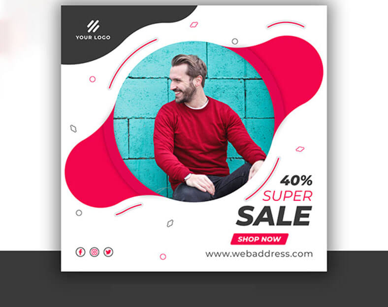

<?xml version="1.0" encoding="UTF-8"?><rss version="2.0"
	xmlns:content="http://purl.org/rss/1.0/modules/content/"
	xmlns:wfw="http://wellformedweb.org/CommentAPI/"
	xmlns:dc="http://purl.org/dc/elements/1.1/"
	xmlns:atom="http://www.w3.org/2005/Atom"
	xmlns:sy="http://purl.org/rss/1.0/modules/syndication/"
	xmlns:slash="http://purl.org/rss/1.0/modules/slash/"
	>

<channel>
	<title>تصميمات سوشيال ميديا |  صانع العلامة التجارية  </title>
	<atom:link href="*****/category/our-services/social-media-designs/feed/" rel="self" type="application/rss+xml" />
	<link>*****/category/our-services/social-media-designs/</link>
	<description>شركة تصميم جرافيك</description>
	<lastBuildDate>Sun, 29 Oct 2023 14:59:29 +0000</lastBuildDate>
	<language>ar</language>
	<sy:updatePeriod>
	hourly	</sy:updatePeriod>
	<sy:updateFrequency>
	1	</sy:updateFrequency>
	<generator>https://wordpress.org/?v=6.3.3</generator>
	<item>
		<title>تصميم إعلانات منصات التواصل الاجتماعي السوشيال ميديا</title>
		<link>*****/social-media-ads-design/</link>
		
		<dc:creator><![CDATA[admin]]></dc:creator>
		<pubDate>Wed, 23 Jun 2021 14:33:42 +0000</pubDate>
				<category><![CDATA[تصميمات سوشيال ميديا]]></category>
		<guid isPermaLink="false">*****/?p=2594</guid>

					<description><![CDATA[<p>تصميم اعلانات منصات التواصل الاجتماعي هي من اهم الامور التي تظهر جودة عملك وتعمل على تسويقه في صورة احترافية ومميزة، كما ان لها تاثير فعال على<span class="excerpt-hellip"> […]</span></p>
<p>The post <a href="*****/social-media-ads-design/">تصميم إعلانات منصات التواصل الاجتماعي السوشيال ميديا</a> appeared first on <a href="*****"> صانع العلامة التجارية  </a>.</p>
]]></description>
										<content:encoded><![CDATA[<p>تصميم اعلانات منصات التواصل الاجتماعي هي من اهم الامور التي تظهر جودة عملك وتعمل على تسويقه في صورة</p>
<p>احترافية ومميزة، كما ان لها تاثير فعال على المستخدمين لمنصات التواصل الاجتماعي، حيث تستخدمها جميع الشركات</p>
<p>والمواقع لاشهار عملها سواء كان مؤسسة او فردا او شركة، ولا يمكن ان تقوم شركة وتنج في اي مجال بدون استخدام</p>
<p>وعمل تصميم اعلانات السوشيال ميديا، ومهما بلغت مهارة الشركة او المؤسسة في التسويق عن نفسها، وهذا راجع الى</p>
<p>التحديثات التي تقوم بها منصات التواصل الاجتماعي.</p>
<hr />
<h3>ما هي اعلانات السوشيال ميديا؟</h3>
<p>تصميم اعلانات منصات التواصل الاجتماعي هي تصميمات يتم استخدامها للترويج عن منتج ما او خدمة على السوشيال ميديا</p>
<p>بهدف الوصول الى اكبر عدد من الجمهور المستهدف المهتم بمجالك ويتم التسويقمن خلال شركات للتسويق او عن طريق صاحب</p>
<p>العمل نفسه اذا تواجدت الخبرة في ذلك، و اشهر المواقع الخاصة بالسوشيال ميديا مثل فيسبوك وتويتر انستقرام ومواقع اخرى.</p>
<p>كذلك تصميم اعلانات السوشيال ميديا هي تصميمات تعمل على اظهار منتجاتك وخدمات بصورةاحترافية تعمل على جذب</p>
<p>الجمهورالمستهدف الى الشراء فاذا كنت ستقوم بعمل <a href="*****/facebook-post-design/">تصميم منشور فيسبوك</a> سوف تحتاج الى التركيز اكثر على الصورة</p>
<p>والالوان لان الفيسبوك يعتمد بشكل اساسي على الصور.</p>
<hr />
<h3>اهمية تصميم اعلانات منصات التواصل الاجتماعي</h3>
<p>تصميم اعلانات منصات التواصل الاجتماعي لها اهمية كبيرة فهي تعتبر احدى وسائل الجذب للجمهور، فعند تصميم اعلانات</p>
<p>السوشيال ميديا ناجح، تجذب الجمهور الى التفاعل مع الاعلان، فكل ذلك يحدث من خلال تصميم احترافي للاعلان يملك</p>
<p>خصائص تفاعلية فيجب ان يقوم بتصميمه مختص في التصميمات التسويقية، لضمات تفاعل الجمهور والشراء عند مشاهدة الاعلان.</p>
<p>كذلك منصات التواصل الاجتماعي هي الاشهر والاكثر استخداما في وقتنا الحالي، لذلك يجب عدم اهمالها واستخدامها، فهي تعزز</p>
<p>من تواجد عملك وسط العملاء، حيث يمكنك تسويق شركتك او مؤسستك من خلال <a href="*****/instagram-post-design/">تصميم منشور Instagram</a> او <a href="*****/youtube-cover-channel-design/">تصميم غلاف قناة يوتيوب</a>، وجميع</p>
<p>تصميمات السوشيال ميديا تعمل على انتشار شركتك واشهار نشاطك. لان منصات التواصل الاجتماعي يقوم باستخدامها</p>
<p>الملايين من الاشخاص حول العالم.</p>
<hr />
<h3>سعر تصميم اعلانات منصات التواصل الاجتماعي</h3>
<p>تختلف الاسعار من شركة الى اخرى فالسوشيال ميديا متغيرة دائما، فيمكن ان يحدد السعر على اساس الجودة</p>
<p>والخدمة المقدمة في التصميم، وشركات تصميم الوشيال ميديا كثيرة لذلك احرص عند اختيار شركة تصميم سوشيال</p>
<p>ميديا ان تكون شركة احترافية ومميزة، ففالتصميم عمل ابداعي يقدر من مصمم لاخر، فلا تنخدع بتكلفة التصميمات</p>
<p>المنخفضة فيمكن ان يكون التصميم رديئ ولا يتوافق مع شروط فيسبوك الاعلانية، وتخسر المال والوقت، لذلك ننصحك</p>
<p>باختيار شركة تصميم احترافية.</p>
<p>كذلك اذا كنت تريد وتبحث عن شركة احترافية لعمل تصميمات الواصل الاجتماعي فيمكنك من خلال</p>
<p><a href="*****/">شركة  صانع العلامة التجارية  </a> شركة تصميمات الجرافيك والسزشيال ميديا وتصميمات الاعمال ان تضمن لك حصولك</p>
<p>على تصميمات امنصات التواصل الاجتماعي احترافية ومميزة تلبي جميع اهدافك.</p>
<hr />
<h4>شاهد ايضا</h4>
<p><a href="*****/instagram-ads-design-pictures/">تصميم صور اعلانات وبوستات انستقرام</a></p>
<p><a href="*****/youtube-video-design-pictures/">تصميم صور فيديوهات قناة اليوتيوب</a></p>
<hr />
<h3><span id="%D8%A7%D9%84%D8%AA%D8%B5%D9%85%D9%8A%D9%85%D8%A7%D8%AA_%D8%A7%D9%84%D8%A7%D8%B3%D8%A7%D8%B3%D9%8A%D8%A9_%D9%84%D9%84%D8%B3%D9%88%D8%B4%D9%8A%D8%A7%D9%84_%D9%85%D9%8A%D8%AF%D9%8A%D8%A7"></span>اساسيات تصميمات التواصل الاجتماعي</h3>
<h4>تصميم بروفايل</h4>
<p>البروفايل هو واجهة لصفحتك على التواصل الاجتماعي فعند دخول الزائرين الى صفحتك فاول شئ يلاحظه الزائر</p>
<p>هو صورة البروفايل، فيجب ان تبهر زوار صفحتك على التواصل الاجتماعي، من خلال تصميم مميز واحترافي تجذب به انتباه عملائك.</p>
<h4>تصميم غلاف</h4>
<p>تصميم غلاف فيسبوك من الامور الهامة لعملك التجاري فصورة الغلاف تجعل ممن عملك اكثر احترافية، امام عملائك</p>
<p>فيمكن اساتخدامها في <a href="*****/facebook-cover-design/">تصميم غلاف فيسبوك</a> او <a href="*****/twitter-cover-and-photo-design/">تصميم غلاف وصورة تويتر</a>، يظهر عملك بشكل احترافي ومميز وتعمل</p>
<p>على زيادة مبيعاتك وارباحك.</p>
<h4>تصميمات متغيرة</h4>
<p>هذه التصميمات تتغير باستمرار بسبب التحديثات التي تحدث لها دائما مثل المناسبات والعروض الجديدة والذكرى السنوية للشركة، مثل تصميمات</p>
<p>التصميمات المتغيرة هي تصميمات تتغير بتغير التحديثات على الصفحة والمناسبات والعروض الجديدة مثل تصميم منشورات</p>
<p>انستا او تصميم منشور فيسبوك <a href="https://ar-ar.facebook.com/enespanol/" target="_blank" rel="noopener">facebook</a>، وتحتاجها الصفحة بشكل يومي كما تحدث عملية التغير بسبب تغير</p>
<p>السوق وسياسات التواصل الاجتماعي.</p>
<h4>تصميمات خاصة</h4>
<p>كذلك هذه التصميمات تصمم من اجل المناسبات الخاصة وهي تكون على شكل فيديو او صور.</p>
<hr />
<h3><span id="%D8%A7%D8%B3%D8%AA%D8%AE%D8%AF%D8%A7%D9%85%D8%A7%D8%AA_%D8%A7%D9%84%D8%A7%D8%B9%D9%84%D8%A7%D9%86%D8%A7%D8%AA_%D8%A7%D9%84%D9%85%D9%85%D9%88%D9%84%D8%A9"></span>استخدامات تصميم اعلانات منصات التواصل الاجتماعي</h3>
<p>تستخد تصميم اعلانات منصات التواصل الاجتماعي اعلانات التواصل الاجتماعي في عملية تحسين ظهور موقعك او شركتك</p>
<p>او مؤسستك بشكل احترافي في التواصل الاجتماعي المتنوعة، حيث تقوم بتعزيز انتشار شركتك على نطاق اوسع من الجمهور</p>
<p>المستهدف، الذي يهتم بمجال عملك</p>
<p>كذلك يمكن اساتخدام تصميمات التواصل الاجتماعي حصول شركتك على التقييمات الايجابية من الجمهور، من خلال تفاعلهم</p>
<p>مع الاعلانات وتقييم منتجاتك وخدماتك وتستخدم كذلك وسيلة للربح من خلال اساتخدامها في تسويق منتجاتك وخدماتك.</p>
<hr />
<h3><span id="%D9%84%D9%85%D8%A7%D8%B0%D8%A7_%D8%AA%D8%AD%D8%AA%D8%A7%D8%AC_%D8%A7%D9%84%D9%89_%D8%B4%D8%B1%D9%83%D8%A9_%D8%AA%D8%B5%D9%85%D9%8A%D9%85_%D8%A7%D8%AD%D8%AA%D8%B1%D8%A7%D9%81%D9%8A%D8%A9%D8%9F"></span>افضل شركة تصميم</h3>
<p>شركة  صانع العلامة التجارية  هي افضل شركة تصميم في مصر حيث نملك افضل خبراء التصميم والتسويق،ونعمل على دراسة السوق</p>
<p>مما يجعل تصميماتنا احترافية ومميزة لعملك، نصمم لك افضل التصميمات الخاصة بالسوشيال ميديا ونعرف ما يحتاجه عملك</p>
<p>لذلك عند اختيار شركة  صانع العلامة التجارية  انت تختار النجاح، وهناك عدة شياء اخرى توضح لماذا نحن</p>
<p>افضل شركة تصميم تصميمات السوشيال ميديا وهي:</p>
<ul>
<li>شعارشركتنا هو راحة العملاء في المقام الاول.</li>
<li>لدينا افضل الخدمات والعروض المميزة.</li>
<li>لدينا افضل فريق من الخبرا في تصميمات السوشيال ميديا.</li>
<li>تصميمات تتوافق مع سياسات منصات التواصل الاجتماعي.</li>
<li>كذلك افضل التصميمات العصرية والجذابة.</li>
<li>متابعة عملائنا من خلال طرق التواصل الخاصة بنا.</li>
<li>نعطيك افكار اذا لم يكن لديك افكار للتصميمات عن طريق دراسة مجال عملك.</li>
<li>تصميمات تناسب ميزانيتك.</li>
<li>تصميمات مبتكرة وابداعية.</li>
<li>لدينا العديد من طرق الدفع الاونلاين.</li>
<li>كذلك دعم فني متوفر 24 ساعة.</li>
<li>اعمالنا داخل مصر وخارجها.</li>
<li>ندرس السوق ومجالك عملك ووفقا له يتم تصميم الاعلان.</li>
</ul>
<p>The post <a href="*****/social-media-ads-design/">تصميم إعلانات منصات التواصل الاجتماعي السوشيال ميديا</a> appeared first on <a href="*****"> صانع العلامة التجارية  </a>.</p>
]]></content:encoded>
					
		
		
			</item>
		<item>
		<title>تصميم غلاف وصورة تويتر</title>
		<link>*****/twitter-cover-and-photo-design/</link>
		
		<dc:creator><![CDATA[admin]]></dc:creator>
		<pubDate>Thu, 18 Feb 2021 10:37:54 +0000</pubDate>
				<category><![CDATA[تصميمات سوشيال ميديا]]></category>
		<guid isPermaLink="false">*****/?p=685</guid>

					<description><![CDATA[<p>تصميم غلاف وصورة تويتر او تصميم هيدر تويتر في ظل استخدام الملايين من الاشخاص وسائل التواصل الاجتماعي والسوشيال ميديا بشكل يومي، فيجب ان تسال نفسك هذا<span class="excerpt-hellip"> […]</span></p>
<p>The post <a href="*****/twitter-cover-and-photo-design/">تصميم غلاف وصورة تويتر</a> appeared first on <a href="*****"> صانع العلامة التجارية  </a>.</p>
]]></description>
										<content:encoded><![CDATA[<p><a href="*****/twitter-cover-and-photo-design/">تصميم غلاف وصورة تويتر</a> او تصميم هيدر تويتر في ظل استخدام الملايين من الاشخاص وسائل التواصل الاجتماعي والسوشيال ميديا بشكل يومي، فيجب ان تسال نفسك هذا السوال كيف يمكن ان تكون مميز وسط الالف من حسابات تويتر؟ والاجابة بكل سهولة، هي من خلال انشاء تصميمات رائعة ومميزة وجذابة تحافظ عى مظهرك امام عملائك وتظهرك بمظهر احترافي.</p>
<p>كذلك ما عليك فعله ببساطه، هو اختيار شركة تصميم غلاف تويتر او تصميم غلاف تطبيق تويتر لتصمم لك غلاف مميز يلبي جميع اهدافك التسويقية. كما يمكنك التواصل مع شركة  صانع العلامة التجارية  للتصميم فنحن نملك الكثير من التصميمات العصرية والاحترافية التي تخدم جميع اهدافك التسويقية، باافضل الاسعار واقل التكلفة.</p>
<h4>نماذج من اعمال تصميم غلاف وصورة تويتر</h4>

<a href='*****/twitter-cover-and-photo-design/attachment/868/'></a>
<a href='*****/twitter-cover-and-photo-design/attachment/7458/'></a>
<a href='*****/twitter-cover-and-photo-design/attachment/47568/'></a>
<a href='*****/twitter-cover-and-photo-design/attachment/47784/'></a>
<a href='*****/twitter-cover-and-photo-design/75-3/'></a>
<a href='*****/twitter-cover-and-photo-design/attachment/758/'></a>

<hr />
<h3>ماهو <strong>تطبيق تويتر؟</strong></h3>
<p>هو موقع تواصل اجتماعي حيث يستخدمه الاشخصاص للتواصل بالرسائل القصيرة وتسمى التغريدات حيث يقوم</p>
<p>بنشرها المستخدمين للاشخاص الذين يتابعوهم وتكون التغريد مقيدة بعدد حروف وهو 280 وهناك طرق.</p>
<hr />
<div id="attachment_1929" style="width: 310px" class="wp-caption alignleft"><p id="caption-attachment-1929" class="wp-caption-text">استخدام تطبيق تويتر</p></div>
<h3>كيفية<strong> استخدام تطبيق تويتر</strong>؟</h3>
<ul>
<li><strong> كتابة تغريدة في تويتر</strong></li>
</ul>
<p>تصميم غلاف تطبيق تويتر كتابة تغريدة في تويتر من الامور السهلة والبسيطة جدا في تويتر ما عليك فقط سوى تسجيل الدخول الى حسابك في تتويتر</p>
<p>والضغط على زر تغريدة وسيظهر لك مربع لتكتب فيه بكل سهولة ولكن انت ستكون مقيد بعدد احرف وهو 280 حرف ويمكنك اضافة</p>
<p>صورة ثابتة او صورة متحركة GIF ويمكنك الاشارة الى شخص محدد بالرمز @ واسم الشخص او وضع هذا الرمز # ويسمى hashtag</p>
<p>ثم النقر على زر تغريدة tweet.</p>
<ul>
<li><strong>عمل ثريد تويتر</strong></li>
</ul>
<p>وهي عبارة عن سلسلة من التغريدات ولانشاء ثريد من التغريديات تقوم بالاتي:</p>
<p>قم بالضغط على على تغريدة جديدة Tweet ثم اكتب ما تريدها وعند الانتهاء قم بالضغط على ايقونة + لاضافة تغريدة جديدة لعمل تغريدة للتغريدة الاصلية كذلك بعدها قم بلضغط على تغريد الكل Tweet all لنشر مشاركاتك من التغريدات يمكنك ايضا حذف تغريدة اذا اردت ذلك قم بالضغط على ايقونة الحذف ذات اللون الرمادي واذا كنت تريد حذف جميع السلسلة قم بالضغط على الايقونة ذات اللون الازرق.</p>
<ul>
<li><strong> طريقة التغريد في تويتر لشخص</strong></li>
</ul>
<p>ادخل الى صفحتك الشخصية في تويتر واضغط علة تغريد tweet واكتب الرسالة المكونة من 280 حرف التي تريد كتابتها ثمبعد ان تنتهي من كتابة رسالتك، قم بكتابة هذا الرمز (@) وبجانبه اسم الشخص الذي تريد ان يرى تغريدتك له ويمكنك كتابة اكثر من شخص لتختص به تغريدتك.</p>
<hr />
<h3>اهمية<strong> تصميم غلاف وصورة تويتر</strong></h3>
<p><a href="*****/twitter-cover-and-photo-design/">تصميم غلاف وصورة تويتر</a> اذا كنت تعمل في نشاط ما و تصميم غلاف تويتر. كذلك تصميم غلاف لاي منصة او موقع تقوم بالترويج عليها لنشاطك، يحتاج الى غلاف مثل الفيسبوك فاول شيئ تقوم بعمله فس صفحتك على الفيسبوك هو<span style="font-weight: 400;"> <a href="*****/facebook-cover-design/">تصميم غلاف فيسبوك</a></span> وصورة للفيس بوك. ذلك لكي تجذب الاشخاص الى صفحتك، او<span style="font-weight: 400;"> <a href="*****/youtube-cover-channel-design/">تصميم غلاف قناة يوتيوب</a></span><span style="color: #000000;"> لقناتك على اليوتيوب</span> واذا كنت سوف تبدء التريوج لنشاطك على تويتر  فهذا شئ في غاية الاهمية لحسابك، وغلاف تويتر يحتوى على عدة اشياء مهمة تجعلك تتميز وسط الشركات والحسابات المنافسة وهي:</p>
<ul>
<li>خلق الوعي بعلامتك التجارية اذا كنت تمتلك نشاط تجاري</li>
<li>يظهرك امام عملائك بمظهر احترافي وجذاب</li>
<li>كذلك يعطي عملائك شعور بالثقة والاطمئنان لمتابعتك</li>
<li>زيادة التفاعل مع حسابك على تويتر</li>
<li>تحفيز العملاء على متابعتك</li>
</ul>
<hr />
<div id="attachment_1930" style="width: 310px" class="wp-caption alignleft"><p id="caption-attachment-1930" class="wp-caption-text">تصميم غلاف وصورة تويتر</p></div>
<h3>محتويات <strong>تصميم غلاف وصورة تويتر</strong></h3>
<p>هناك عناصر ومكونات يجب عليك وضعها داخل تصميم غلاف تويتر لكي يكون مكتمل ويلبي جميع اهدافك التسويقية التي تهدف اليه وهي:</p>
<ul>
<li>اسم الشركة او الحساب.</li>
<li>الشعار او اللوجو.</li>
<li>كذلك معلومات الاتصال الخاصة بك وبالشركة.</li>
<li>رسومت وصور تعبر عن نشاطك او مجالك.</li>
<li>الوان جذابة ومتناسقة.</li>
<li>كذلك يمكن اضافة عبارة تحفيزية.</li>
</ul>
<hr />
<h3>شاهد ايضا</h3>
<p><a href="*****/twitter-cover-and-photo-design/">تصميم غلاف وصورة تويتر</a></p>
<p><a href="*****/instagram-story-design/">تصميم قصة انستقرام instagram story</a></p>
<hr />
<h3>مقاس <strong>تصميم غلاف وصورة تويتر 2021</strong></h3>
<p>قبل البدء في اي تصميم يجب ان تعرف في البداية ما هي المقاسات التي يجب ان تسخدمها في عمل الغلاف، ولكل</p>
<p>منصة او موقع يجب يكون له مقاساته الخاصة.</p>
<p>مقاسات غلاف تويتر تكون 1500×500 بيكسل</p>
<p>مقاسات الصور الشخصية على تويتر 400×400 بيكسل</p>
<p>مقاس تصميم ترويسة تويتر 260×520</p>
<hr />
<h3>البرامج المستخدمة في التصميم</h3>
<p>برنامج تصميم غلاف تويتر و تصميم ترويسة تويتر او تصميم غلاف تويتر هو برنامج ادوبي فوتوشوب <a href="https://www.adobe.com/mena_ar/products/photoshop/free-trial-download.html" target="_blank" rel="noopener">photoshop</a></p>
<p>The post <a href="*****/twitter-cover-and-photo-design/">تصميم غلاف وصورة تويتر</a> appeared first on <a href="*****"> صانع العلامة التجارية  </a>.</p>
]]></content:encoded>
					
		
		
			</item>
		<item>
		<title>تصميم غلاف قناة يوتيوب احترافي</title>
		<link>*****/youtube-cover-channel-design/</link>
		
		<dc:creator><![CDATA[admin]]></dc:creator>
		<pubDate>Thu, 18 Feb 2021 10:36:46 +0000</pubDate>
				<category><![CDATA[تصميمات سوشيال ميديا]]></category>
		<guid isPermaLink="false">*****/?p=668</guid>

					<description><![CDATA[<p>تصميم غلاف قناة يوتيوب، او انشاء غلاف لليوتيوب هو من الامور المهمة لتنمية نشاطك وزيادة متابعينك على قناتك فغلاف جذاب ومميز يعبر عن نشاطك يمتلك الكثير<span class="excerpt-hellip"> […]</span></p>
<p>The post <a href="*****/youtube-cover-channel-design/">تصميم غلاف قناة يوتيوب احترافي</a> appeared first on <a href="*****"> صانع العلامة التجارية  </a>.</p>
]]></description>
										<content:encoded><![CDATA[<p><a href="*****/youtube-cover-channel-design/"><span style="font-weight: 400;">تصميم غلاف قناة يوتيوب</span></a>، او انشاء غلاف لليوتيوب هو من الامور المهمة لتنمية نشاطك وزيادة متابعينك على قناتك فغلاف جذاب ومميز يعبر عن نشاطك يمتلك الكثير من عناصر الجذب للمشاهدين، يجعلك تظهر امام متابعينك بصورة احترافية خصوصا اذا كنت متخصص في مجال تعليمي، ولتصميم غلاف يوتيوب ناجح يجب ان تعرف اهميته وتكلفته والبرامج المستخدمة في تصميمه والمقاسات التي يمكنك استخدامها، واذا كنت تبحث عن<strong> شركة تصميم</strong> غلاف قناة يوتيوب احترافي يمكنك التواصل مع<span style="font-weight: 400;"> <a href="*****/">شركة  صانع العلامة التجارية  </a></span> للتصميم نحن افضل شركة في مجال تصميمات السوشيال ميديا، ومطبوعات الاعمال، والهوية البصرية للشركات بافضل الاسعار واقل التكلفة.</p>
<h4>نماذج من اعمال تصميم غلاف قناة يوتيوب احترافي</h4>

<a href='*****/youtube-cover-channel-design/%d9%86%d9%85%d9%88%d8%b0%d8%ac-%d8%ba%d9%84%d8%a7%d9%81-%d9%8a%d9%88%d8%aa%d9%8a%d9%88%d8%a8-6/'></a>
<a href='*****/youtube-cover-channel-design/%d9%86%d9%85%d9%88%d8%b0%d8%ac-%d8%ba%d9%84%d8%a7%d9%81-%d9%8a%d9%88%d8%aa%d9%8a%d9%88%d8%a8-7/'></a>
<a href='*****/youtube-cover-channel-design/%d9%86%d9%85%d9%88%d8%b0%d8%ac-%d8%ba%d9%84%d8%a7%d9%81-%d9%8a%d9%88%d8%aa%d9%8a%d9%88%d8%a8-8/'></a>
<a href='*****/youtube-cover-channel-design/%d9%86%d9%85%d9%88%d8%b0%d8%ac-%d8%ba%d9%84%d8%a7%d9%81-%d9%8a%d9%88%d8%aa%d9%8a%d9%88%d8%a8-2/'></a>
<a href='*****/youtube-cover-channel-design/%d9%86%d9%85%d9%88%d8%b0%d8%ac-%d8%ba%d9%84%d8%a7%d9%81-%d9%8a%d9%88%d8%aa%d9%8a%d9%88%d8%a8-3/'></a>
<a href='*****/youtube-cover-channel-design/%d9%86%d9%85%d9%88%d8%b0%d8%ac-%d8%ba%d9%84%d8%a7%d9%81-%d9%8a%d9%88%d8%aa%d9%8a%d9%88%d8%a8-4/'></a>

<hr />
<h3>ماهو غلاف قناة اليوتيوب؟</h3>
<p><strong>تصميم غلاف قناة يوتيوب</strong> او<span style="font-weight: 400;"> <a href="*****/youtube-video-design-pictures/">تصميم صور فيديوهات قناة اليوتيوب</a></span> هو اول شئ يراها متابعينك عندما</p>
<p>يقومون بزيارة قناتك على اليوتيوب، ويوجد في ملفك الشخصي ويكون غلاف يمتلك عناصر جذابة تعبر عن</p>
<p>نوعية نشاطك وفيديوهاتك لجذب انتباه المشاهدين بسرعة.</p>
<hr />
<div id="attachment_1473" style="width: 310px" class="wp-caption alignleft"><p id="caption-attachment-1473" class="wp-caption-text">عمل غلاف يوتيوب</p></div>
<h3>اهمية<strong> عمل غلاف يوتيوب</strong></h3>
<p>هناك الكثير من الاهمية لغلاف قناة اليوتيوب فهو واجهة قناتك التي يراها متابعينك ومشتركينك على اليوتيوب، حيث يجب</p>
<p>ان يمتلك التصميم الكثير من الجوانب التسويقية التي تساعد في جذب انتباه جمهورك الى قناتك وسنذكر بعض اهمية تصميم غلاف اليوتيوب:</p>
<ul>
<li>جذب انتباه متابعينك</li>
<li>اداة دعاية لقناتك</li>
<li>كذلك تعطى عملائك الثقة في قناتك</li>
<li>تصميم جذاب وواضح يوضح نوعية نشاطك</li>
<li>يظهر احترافية قناتك وجودتها<br />
<hr />
</li>
</ul>
<h3>اسعار وتكلفة غلاف قناة يوتيوب احترافي</h3>
<p>تختلف تحديد اسعار<span style="color: #6A2186;"><strong> <a href="*****/youtube-cover-channel-design/"><span style="font-weight: 400;">تصميم غلاف قناة يوتيوب</span></a></strong></span>، حيث من الممكن ان تقدم لك<strong> شركة</strong> ليست محترفة تصميم رديء ولا يظهر جودة قناتك ولا احترافيتها، بل يساهم في انخفاض متابعينك باسعار تصميمات منخفضة وتكلفة جيدة لكن السوال هنا ماذا ستأخذ بالمقابل بهذا الثمن؟ فالاجابة هنا ليست حاسمة انما هي مجهول لا تعرف ماذا ستجد في شكل الغلاف يمكن ان تتخيل تصميم غلاف يوتيوب جيد ومميز، لكن<strong> الشركة</strong> تعطيك بدلا من ذلك شئ سيئ، فيجب عليك اختيار <strong>شركة تصميم غلاف قناة يوتيوب </strong> محترفة تلبي احتياجاتك في االشكل الذي تريدها يمكنك التواصل مع<span style="color: #6A2186;"><strong> <span style="font-weight: 400;"><a href="*****/">شركة  صانع العلامة التجارية  </a></span></strong></span> افضل شركة تصميم  غلاف يوتيوب في مصر ستعمل على تصميمك باسس علمية وتسويقية وكل هذا بافضل الاسعار واقل التكلفة.</p>
<hr />
<h3></h3>
<div id="attachment_1472" style="width: 310px" class="wp-caption alignleft"><p id="caption-attachment-1472" class="wp-caption-text">محتويات الغلاف</p></div>
<h3>محتويات الغلاف</h3>
<p>عندما تبدأ في تصميم ما فهو يحتوي على عناصر تجعله يكون ذا مظهر متكامل، فبغير هذه العناصر لا تستطيع انشاء شئ يفهمه</p>
<p>الناس ويكون اداة تخدم قناتك على اليوتيوب، ومن هذه العناصر او مشروعك، او شركتك، فهذه العناصر تكون ثابتة في كل تصميمات غلاف قناة اليوتيوب،</p>
<p>لكن هذه العناصر تكون ترتيبها واشكالها مختلفة بحيث تميز نشاطك وقناتك على اليوتيوب عن اي قناة اخرى وهي:</p>
<ul>
<li>اسم قناتك</li>
<li>شعار او لوجو قناتك</li>
<li>رسومات تعبر عن قناتك او نشاطك</li>
<li>عبارات تسويقية مؤئرة</li>
<li>الوان جذابة تتناسب مع قناتك</li>
<li>معلومات الاتصال بك</li>
<li>البريد الالكتروني الخاص بك<br />
<hr />
</li>
</ul>
<h3>شاهد ايضا</h3>
<p><a href="*****/design-logo-facebook-instagram-youtube/">تصميم لوجو بيدج فيسبوك</a></p>
<p><a href="*****/instagram-ads-design-pictures/">تصميم صور اعلانات وبوستات انستقرام</a></p>
<hr />
<h3>البرامج المستخدمة في انشاء غلاف لليوتيوب مميز</h3>
<p>تستخم برامج كثير في تصميم غلاف قناة يوتيوب، ويمكنك ان تسخدم كذلك شركات تصميم غلاف يوتيوب احترافي ومميز باسعار وتكلفة منخفضة، بدلا من تصميمه بنفسك لكن العمل على تصميم غلاف قناة يوتيوب ليس بالامر الصعب يمكنك فقط تحميل اي برنامج تريده وتعرف كيفية استخدامه، وهكذا تكون قد حصلت على تصميم غلاف مناسب لقناتك على اليوتيوب، ومن اشهر البرامج استخداما للتصميم هو:</p>
<p>برنامج ادوبي فوتوشوب <a href="https://www.adobe.com/mena_ar/products/photoshop/free-trial-download.html" target="_blank" rel="noopener">photoshop</a>، فهو من اسهل البرامج ويحتوي على العديد من الادوات التي تمكنك من عمل غلف يوتيوب مميز ومناسب لقناتك على اليوتيوب.</p>
<hr />
<h3>مقاسات وابعاد تصميم غلاف قناة اليوتيوب</h3>
<p>يجب عليك قبل ان تبداء في الشروع في تصميم غلاف يوتيوب، ان تعرف المقاسات والابعاد المناسبة لجميع الاجهزة التي يمكن ان يشاهد من خلالها الزائر قناتك، مثل الكمبيوتر والهاتف والاجهزة اللوحية وتكون 1546 × 420 بكسل وسيتم تلقائيا قص هذه الحدود، لتكون مناسبة مع جميع الاجهزة.</p>
<hr />
<h3>طريقة تغير الغلاف لقناة اليوتيوب</h3>
<p>هناك بعض الخطوات البسيطة التي عليك فعلها، لتغيير غلاف قناة اليوتيوب الخاص بك وهي:</p>
<ul>
<li>قم بتسجيل الدخول الى حسابك في اليوتيوب، ثم قم بالضغط على اسم المستخدم الخاص بك، اعلى اليمين وانقرا على قناتي.</li>
<li> قم بالضغط على اضافة في المربع المستطيل الكبير.</li>
<li>ثم قم بالنقر فوق تحميل صورة من جهاوز الكمبيوتر واختيار الصورة التي صممتها.</li>
<li> واخير قم بالضغط على نشر وهكذا تكون قد اضفت صورة غلاف قناتك على اليوتيوب.</li>
</ul>
<p>The post <a href="*****/youtube-cover-channel-design/">تصميم غلاف قناة يوتيوب احترافي</a> appeared first on <a href="*****"> صانع العلامة التجارية  </a>.</p>
]]></content:encoded>
					
		
		
			</item>
		<item>
		<title>تصميم صور متحركة للفيس وانستقرام</title>
		<link>*****/design-animated-for-facebook-and-instagram/</link>
		
		<dc:creator><![CDATA[admin]]></dc:creator>
		<pubDate>Thu, 18 Feb 2021 10:36:17 +0000</pubDate>
				<category><![CDATA[تصميمات سوشيال ميديا]]></category>
		<guid isPermaLink="false">*****/?p=719</guid>

					<description><![CDATA[<p>تصميم صور متحركة للفيس وانستقرام و انشاء صور متحركة للفيس تتيح منصة &#8220;الفيسبوك&#8220; والانستقرام امكانية استخدام الصور المتحركة gif، وهي من وسائط التواصل الاجتماعي المتحركة و<span class="excerpt-hellip"> […]</span></p>
<p>The post <a href="*****/design-animated-for-facebook-and-instagram/">تصميم صور متحركة للفيس وانستقرام</a> appeared first on <a href="*****"> صانع العلامة التجارية  </a>.</p>
]]></description>
										<content:encoded><![CDATA[<p><a href="*****/design-animated-for-facebook-and-instagram/">تصميم صور متحركة للفيس وانستقرام</a> <span style="color: #6A2186;"><span style="color: #000000;">و انشاء صور متحركة للفيس</span></span> تتيح منصة <strong>&#8220;</strong><a href="https://www.facebook.com/campaign/landing.php?campaign_id=1662371034&amp;extra_1=s%7Cc%7C355706840587%7Ce%7C%D9%81%D9%8A%D8%B3%D8%A8%D9%88%D9%83%7C&amp;placement=&amp;creative=355706840587&amp;keyword=%D9%81%D9%8A%D8%B3%D8%A8%D9%88%D9%83&amp;partner_id=googlesem&amp;extra_2=campaignid%3D1662371034%26adgroupid%3D65758736522%26matchtype%3De%26network%3Dg%26source%3Dnotmobile%26search_or_content%3Ds%26device%3Dc%26devicemodel%3D%26adposition%3D%26target%3D%26targetid%3Dkwd-297081090180%26loc_physical_ms%3D1005394%26loc_interest_ms%3D%26feeditemid%3D%26param1%3D%26param2%3D&amp;gclid=CjwKCAiAsaOBBhA4EiwAo0_AnEMC3gjJJ4zx5B7y6r32HiKYUK931w4hMbAFHhr6Tlm6WFHbSkz4IBoCLv8QAvD_BwE">الفيسبوك</a><strong>&#8220;</strong> والانستقرام امكانية استخدام الصور المتحركة gif، وهي من وسائط التواصل الاجتماعي المتحركة و تستخدم بشكل كبير وموسع، ويحتاج البعض الى استخدام الصور المتحركة للدعاية والاعلان عن منتجات او الترويج عن معلومات، حيث يبحث الجميع عن هذه الصور المتحركة للفيسبوك والانستقرام  وذلك ليقوم بمشاركتها مع اصدقائه بهدف المرح او بهدف التسويق لمنتج ما.</p>
<h4>نماذج من اعمال تصميم صور متحركة للفيس وانستقرام</h4>

<a href='*****/design-animated-for-facebook-and-instagram/attachment/74568/'></a>
<a href='*****/design-animated-for-facebook-and-instagram/14-23/'></a>
<a href='*****/design-animated-for-facebook-and-instagram/857-2/'></a>
<a href='*****/design-animated-for-facebook-and-instagram/attachment/3321/'></a>
<a href='*****/design-animated-for-facebook-and-instagram/attachment/5287/'></a>
<a href='*****/design-animated-for-facebook-and-instagram/14414-1/'></a>

<hr />
<h3>ماهي الصور المتحرك</h3>
<p><span style="color: #000000;"><strong>الصور المتحركة </strong></span>هي اختصار لكلمة Graphic interchange format&#8221; كذلك تم تصميم الصور المتحركة للوسائط  عام 1987 من خلال<strong> شركة كبيو سيرف</strong> وتدعم صور gif ضغط الصور لتقليل الحجم حيث تقلل عدد الالوان في الصورة المشبعة بالالوان مثل صور الفوتوغرافية وايضا المناطق المتقاربة في اللون مع بعضها، وهي صور بصيغة جيدة للصور ذات اعداد الالوان المنخفضة والتي لا تناسب الصور المتنوعة الكبيرة مثال الصور الفوتوغرافية، <span style="color: #000000;">وكذلك</span> عندما تقوم بعمل<span style="font-weight: 400;"> <a href="*****/facebook-post-design/">تصميم منشور فيسبوك</a></span> يمكنك انشاء المنشور بطريقة الصور المتحركة فهذا يعطي جاذبية واقبال اكثر من المستخدمين للدخول الى صفحتك.</p>
<hr />
<div id="attachment_1952" style="width: 310px" class="wp-caption alignleft"><p id="caption-attachment-1952" class="wp-caption-text">تصميم صور متحركة للفيس وانستقرام</p></div>
<h3>مميزات<span style="color: #000000;"> <strong>تصميم صور متحركة للفيس وانستقرام</strong></span></h3>
<p>كذلك<strong> الصور المتحركة</strong> هي جزء من <strong>وسائط التواصل الاجتماعي المتحركة</strong>، حيث يفضلها الكثير من الاشخاص نظرا لطرافتها</p>
<p>وبساطة تصميمها حيث تتميز بعددة مميزات تقنية وهي:</p>
<ol>
<li> تتيح دعم الصور الشفافة</li>
<li>تدعم الصور الصغيرة</li>
<li>كذلك ذات جودة ممتازة في الصور ذات الاعداد والالوان مثل صور الكرتون والرسوم البيانية</li>
<li>اسعار وتكلفة تصميم صور متحركة للفيس وانستقرام</li>
<li>عناصر ومكونات تصميم الصور المتحركة</li>
</ol>
<hr />
<h3>شاهد ايضا</h3>
<p><a href="*****/design-logo-facebook-instagram-youtube/">تصميم لوجو بيدج فيسبوك وشعار حساب انستقرام احترافي لوجو قناة يوتيوب</a></p>
<p><a href="*****/instagram-ads-design-pictures/">تصميم صور اعلانات وبوستات انستقرام</a></p>
<hr />
<div id="attachment_1951" style="width: 310px" class="wp-caption alignleft"><p id="caption-attachment-1951" class="wp-caption-text">عمل صور متحركة للفيس</p></div>
<h3>مراعاة الاتي في<span style="color: #000000;"><strong> عمل صور متحركة للفيس</strong></span></h3>
<p><strong>عمل صور متحركة للفيس</strong> في وقتنا الحالي تحقق التواصل الاجتماعي كفاءة عالية كذلك تعتبر واثيقة صلة حقيقية وذات قيمة وجذبية وتكون قابلة للمشاركة كذلك</p>
<p><a href="*****/facebook-cover-design/"><span style="font-weight: 400;">تصميم غلاف فيسبوك</span></a> يمكنك وضع صور متحركة داخله لتبهر وتجذب به متابعينك فهي كلوحة اعلانية خاصة بصفحتك ووسائط التواصل الاجتماعي كالتالي:</p>
<p><strong>الوثيقة ذات الثقة</strong>: تظهر للجمهور الذي تستهدفه وتعتمد علي رؤيتها المستبصرة في معرفة الجمهور، او العلامة التجارية</p>
<p>وكذلك الفئة و المنتجات او الخدمات.</p>
<p><strong>تكون حقيقية</strong>: كذلك وهي تمثل جوهر علامتك التجارية والمزاعم والقيم.</p>
<p><strong>ذات قيمة</strong>: حيث تقدم للجمهور شيئ ذوقيمة او خدمات او معلومات.</p>
<p><strong>تمتلك الجاذبية</strong>: تكون فريدة من نوعها ويبحث الناس عنها حيث تجذب الجمهور اليها</p>
<p><strong>قابلية المشاركة</strong>:كذلك يجب ان تكون متاحة للمشاركة والارسال والتحميل والربط وكذلك تستخدم البروتوكولات المعروفة.</p>
<hr />
<h3>اسعار وتكلفة<span style="color: #000000;"><strong> انشاء صور متحركة للفيس</strong></span></h3>
<p>تختلف اسعار <strong>تصميم وسائط التواصل الاجتماعي</strong> فهي تقدر حسب نوع الوسائط التي تريد تصميمها وهي ذات تكلفة</p>
<p>منخفضة للغاية، واذا كنت تبحث عن <strong>شركة </strong><a href="*****/design-animated-for-facebook-and-instagram/"><span style="font-weight: 400;">تصميم وسائط التواصل الاجتماعي المتحركة</span></a> فنحن <a href="*****/"><span style="font-weight: 400;">شركة  صانع العلامة التجارية  </span></a> للتصميم نقدم لك خدمات التصميم باحترافية وبافضل الاسعار واقل التكلفة.</p>
<p>The post <a href="*****/design-animated-for-facebook-and-instagram/">تصميم صور متحركة للفيس وانستقرام</a> appeared first on <a href="*****"> صانع العلامة التجارية  </a>.</p>
]]></content:encoded>
					
		
		
			</item>
		<item>
		<title>تصميم صور اعلانات وبوستات انستقرام</title>
		<link>*****/instagram-ads-design-pictures/</link>
		
		<dc:creator><![CDATA[admin]]></dc:creator>
		<pubDate>Thu, 18 Feb 2021 10:35:46 +0000</pubDate>
				<category><![CDATA[تصميمات سوشيال ميديا]]></category>
		<guid isPermaLink="false">*****/?p=671</guid>

					<description><![CDATA[<p>تصميم صوراعلانات انستقرام، تستطيع من خلالها التسويق لمنتجات وخدمات شركتك او نشاطك التجاري، لتحث العملاء على الدخول الى موقعك او الشراء او حتى زيارة موقعك وتصفحه<span class="excerpt-hellip"> […]</span></p>
<p>The post <a href="*****/instagram-ads-design-pictures/">تصميم صور اعلانات وبوستات انستقرام</a> appeared first on <a href="*****"> صانع العلامة التجارية  </a>.</p>
]]></description>
										<content:encoded><![CDATA[<p><a href="*****/instagram-ads-design-pictures/"><span style="font-weight: 400;">تصميم صوراعلانات انستقرام</span></a>، تستطيع من خلالها التسويق لمنتجات وخدمات شركتك او نشاطك التجاري، لتحث العملاء على الدخول الى موقعك او الشراء او حتى زيارة موقعك وتصفحه فقط، فاي كان هدفك من اعلانك فتستطيع تصميمه ليناسب تلك الاهداف، يمكنك ان تستعين بشركة تصميم صور اعلانات انستقرام بطريقة احترافية ويمكنك التواصل مع <a href="*****/"><span style="font-weight: 400;">شركة  صانع العلامة التجارية  </span></a> <strong>شركة تصميم اعلانات انستقرام</strong> التي تصمم اعلانات انستجرام بطريقة مميزة واحترافية وتحقق لك الكثير من النجاح لحملتك الاعلانية التي تريد نشرها.</p>
<h4>نماذج من اعمال تصميم صور اعلانات وبوستات انستقرام</h4>

<a href='*****/instagram-ads-design-pictures/%d9%86%d9%85%d9%88%d8%b0%d8%ac-%d8%b5%d9%88%d8%b1-%d8%a8%d9%88%d8%b3%d8%aa-%d8%a7%d9%86%d8%b3%d8%aa%d8%a7-8/'></a>
<a href='*****/instagram-ads-design-pictures/%d9%86%d9%85%d9%88%d8%b0%d8%ac-%d8%b5%d9%88%d8%b1-%d8%a8%d9%88%d8%b3%d8%aa-%d8%a7%d9%86%d8%b3%d8%aa%d8%a7-1/'></a>
<a href='*****/instagram-ads-design-pictures/%d9%86%d9%85%d9%88%d8%b0%d8%ac-%d8%b5%d9%88%d8%b1-%d8%a8%d9%88%d8%b3%d8%aa-%d8%a7%d9%86%d8%b3%d8%aa%d8%a7-2/'></a>
<a href='*****/instagram-ads-design-pictures/%d9%86%d9%85%d9%88%d8%b0%d8%ac-%d8%b5%d9%88%d8%b1-%d8%a8%d9%88%d8%b3%d8%aa-%d8%a7%d9%86%d8%b3%d8%aa%d8%a7-3/'></a>
<a href='*****/instagram-ads-design-pictures/%d9%86%d9%85%d9%88%d8%b0%d8%ac-%d8%b5%d9%88%d8%b1-%d8%a8%d9%88%d8%b3%d8%aa-%d8%a7%d9%86%d8%b3%d8%aa%d8%a7-5/'></a>
<a href='*****/instagram-ads-design-pictures/%d9%86%d9%85%d9%88%d8%b0%d8%ac-%d8%b5%d9%88%d8%b1-%d8%a8%d9%88%d8%b3%d8%aa-%d8%a7%d9%86%d8%b3%d8%aa%d8%a7-6/'></a>

<hr />
<h3>ما هي اعلانات انستجرام</h3>
<p>اعلانات انستجرام هي تصميم يحتوي على منتجات وخدمات الشركة او الموقع، ويقصد بها الترويج والتسويق لهذه الخدمات ونشرها ليراها العملاء الذين تستهدفهم والذين يكونون مهتمين بمجال عملك، وتحتوي هذه الاعلانات على عناصر جذابة لتجذب انتباه الجمهور الذي يراها، مثل<span style="font-weight: 400;"> <a href="*****/instagram-post-design/">تصميم منشور Instagram</a></span> فهي خطوة مهمة لتصميم اعلانات انستجرام لان كتابة منشور هي خطوة من خطوات تصميم الاعلان لان كتابة وتصميم المنشور هي جزء لا يتجزء من الاعلان على الانستجرام لذلك يجب ان تجيد كتابة منشورات الانستجرام.</p>
<hr />
<div id="attachment_1481" style="width: 310px" class="wp-caption alignleft"><p id="caption-attachment-1481" class="wp-caption-text">نموذج اعلان انستقرام</p></div>
<h3>كيفية عمل <strong>اعلانات انستقرام</strong></h3>
<p>يجب ان تمتلك برنامج للتصميم تجيد استخدامه، حيث يمكنك بعد ذلك ان تصمم اعلانك المميز والجذاب يجب عليك ايضا اختيار الوان جذابة ومتناسقة مع نشاطك او السلعة التي تقدمها ايضا اضافة خط ذو مظهر جذاب يتماشي مع الالوان التي اخترته لاعلانك،  كذلك اضافة صورة معبرة عن نشاطك مثل ان كنت تبيع النظارات يجب ان تضع صور للنظارات بطريقة جذابة ومميزة، ايضا اضافة اسم وشعار شركتك في تصميم الاعلان، ويجب وضعه في مكان جانبي يراه المستخدمين، كذلك ايضا يمكنك وضع بريدك الالكتروني داخل التصميم او رقم الهاتف، ويجب ان يكون اعلانك بحجم مناسب يتناسب مع جميع الاجهز التي سيستخدمها الاشخاص للدخول الى تطبيق انستجرام.</p>
<hr />
<p><span style="font-size: 25px;"><br />
اهمية</span><strong style="font-size: 25px;"> اعلانات انستقرام</strong></p>
<p>لقد اصبح الانستقرام الان من التطبيقات الهامة واهمية <a href="*****/instagram-story-design/"><span style="font-weight: 400;">تصميم قصة Instagram</span></a><span style="color: #6A2186;"> <span style="color: #000000;">لتكون اعلان يجذب الناس الذين يدخلون يوميا ويقدرو ب</span></span>ملايين من المستخدمين اليومين له، فالانستجرام الان لم يعد بالنسبة للشركات مجرد تطبيق ترفيهي، بل اصبح اداة تسويقية تجتذب الملايين حول العالم كل يوم. واهميته بالنسبة الى اي شركة هي اهمية كبيرة واهميته تكمن في:</p>
<ul>
<li>خلق الوعي بعلامتك التجارية.</li>
<li>كذلك يعمل الاعلان على الانستقرام على لفت انتباه العملاء اليك.</li>
<li>زيادة مبيعاتك وارباحك.</li>
<li>زيادة زيارة العملاء الى موقعك الالكتروني.<br />
<hr />
</li>
</ul>
<h3>اسعار <strong>تصميم صور اعلانات انستقرام</strong></h3>
<p>تختلف تحديد<strong> اسعار تصميم صور اعلانات وبوستات انستقرام</strong>، حيث من الممكن ان تقدم لك شركة ليست محترفة تصميم سيئ ولا يظهر جودة اعلاناتك و احترافيتها، بل يساهم في انخفاض متابعينك، باسعار تصميمات منخفضة وتكلفة جيدة لكن السوال هنا ماذا ستأخذ بالمقابل بهذا الثمن؟ فالاجابة هنا ليست حاسمة انما هي مجهولة، لا تعرف ماذا ستجد في التصميم يمكن ان تتخيل تصميم جيد ومميز، لكن الشركة تعطيك بدلا من ذلك عمل سيئ، فيجب عليك اختيار شركة محترفة تلبي احتياجاتك في التصميم الذي تريدها، يمكنك التواصل مع شركة  صانع العلامة التجارية  افضل شركة في مصر ستعمل على تصميمك باسس علمية وتسويقية وكل هذا بافضل الاسعار واقل التكلفة.</p>
<hr />
<h3>تكلفة <strong>تصميم صور اعلانات انستقرام</strong></h3>
<p>ان تكلفة تصميم اعلان انستقرام منخفضة جدا، بحيث تفضلها معظم الشركات بسبب انخفاض التكلفة من حيث التصميم والتسويق ايضا فاذا اردت تصميم اعلان مميز للانستقرام ويحقق لك النجاح ويكون باسعار وتكلفة مناسبة لك، يمكنك التواصل مع شركة  صانع العلامة التجارية  للتصميم.</p>
<hr />
<h3>شاهد ايضا</h3>
<p><a href="*****/facebook-cover-design/">تصميم غلاف فيسبوك Facebook cover</a></p>
<p><a href="*****/facebook-post-design/">تصميم منشور فيس بوك مميز ومناسب</a></p>
<hr />
<div id="attachment_1482" style="width: 310px" class="wp-caption alignleft"><p id="caption-attachment-1482" class="wp-caption-text">محتويات اعلانات انستقرام</p></div>
<h3>محتويات اعلانات انستقرام</h3>
<p>يحتوي الاعلان على انستقرام على العديد من العناصر المهمة التي ان تضعها في اعلانك على الانستقرام، وهي:</p>
<ul>
<li>اسم الشركة</li>
<li>شعار او لوجو الشركة</li>
<li>الرسوملت المعبرة عن شركتك</li>
<li>كذلك عبارات تحفيزية للعملاء تشرح المنتج او المخدمة باختصار وتكون قصيرة وواضحة</li>
<li>يمكن وضع ملومات الاتصال بك</li>
<li>البريد الالكتروني الخاص بنشاطك التجاري</li>
</ul>
<h3>البرامج المستخدمة في التصميم</h3>
<hr />
<p>يمكنك استخدام تطبيق انستقرام نفسه لعمل اعلانك او اختيار احد البرامج المشهورة للتصميم مثل برنامج:</p>
<p>ادوبي فوتوشوب <a href="https://www.adobe.com/mena_ar/products/photoshop/free-trial-download.html" target="_blank" rel="noopener">photoshop</a> &#8211; اليستريتور ويمكنك استخدام الكثير من البرامج التي تتيح التصميم والتي يكون لديك الخبرة</p>
<p>الكافية فيها للتصميم حيث يساهم معرفتك في الادوات في توفير الوقت والجهد لاخراج اعلانك الى النور.</p>
<hr />
<h3>ابعاد ومقاسات اعلانات انستقرام</h3>
<p>عندما نقوم بتصميم ما يجب ان نحدد في البداية جميع مقاسات التصميم لنستطيع العمل عليه وتكون بدقة 1080× 1080 بيكسل</p>
<p>وتكون هذه للاعلانات المربعة &#8211; كذلك الاعلانات المستطيلة بدقة 1200 × 628 بيكسل وهذه الاعلانات تكون بصيغة landscape ويكون فيها العرض اكبر من الارتفاع.</p>
<p>The post <a href="*****/instagram-ads-design-pictures/">تصميم صور اعلانات وبوستات انستقرام</a> appeared first on <a href="*****"> صانع العلامة التجارية  </a>.</p>
]]></content:encoded>
					
		
		
			</item>
		<item>
		<title>تصميم لوجو فيسبوك احترافي</title>
		<link>*****/design-logo-facebook-instagram-youtube/</link>
		
		<dc:creator><![CDATA[admin]]></dc:creator>
		<pubDate>Thu, 18 Feb 2021 10:06:57 +0000</pubDate>
				<category><![CDATA[تصميمات سوشيال ميديا]]></category>
		<guid isPermaLink="false">*****/?p=683</guid>

					<description><![CDATA[<p>تصميم لوجو بيدج فيسبوك الشعار او لوجو الشركة هو واجة وهوية شركتك وهو الشيء الاول الذي يراه الجمهور الذي يكونون منه الانطباع الاول لشركتك ويوضع على<span class="excerpt-hellip"> […]</span></p>
<p>The post <a href="*****/design-logo-facebook-instagram-youtube/">تصميم لوجو فيسبوك احترافي</a> appeared first on <a href="*****"> صانع العلامة التجارية  </a>.</p>
]]></description>
										<content:encoded><![CDATA[<p><span style="font-weight: 400;"><a href="*****/design-logo-facebook-instagram-youtube/">تصميم لوجو بيدج فيسبوك</a> </span>الشعار او لوجو الشركة هو واجة وهوية شركتك وهو الشيء الاول الذي يراه الجمهور الذي يكونون منه الانطباع الاول لشركتك ويوضع على الاوراق الرسمية واختام الشركات ويظهر في كل الاعلانات والحملات الاعلانية التي تروجها لشركتك.</p>
<p>فهو ببساطة صورة شركتك امام عملائك والجمهور، فيمكن ان يستمر معك الشعار مدى الحياة إذا احسنت اختياره وتصميمه، واختيار شركة تصميم الشعار او اللوجو المناسبة التى تستطيع معها تحقيق النجاح واستدامة الشعار في اذهان عملائك.</p>
<h4>نماذج من اعمال تصميم لوجو</h4>

<a href='*****/design-logo-facebook-instagram-youtube/%d9%86%d9%85%d9%88%d8%b0%d8%ac-%d9%84%d9%88%d8%ac%d9%88-12/'></a>
<a href='*****/design-logo-facebook-instagram-youtube/%d9%86%d9%85%d9%88%d8%b0%d8%ac-%d9%84%d9%88%d8%ac%d9%88-13/'></a>
<a href='*****/design-logo-facebook-instagram-youtube/%d9%86%d9%85%d9%88%d8%b0%d8%ac-%d9%84%d9%88%d8%ac%d9%88-15/'></a>
<a href='*****/design-logo-facebook-instagram-youtube/%d9%86%d9%85%d9%88%d8%b0%d8%ac-%d9%84%d9%88%d8%ac%d9%88-19/'></a>
<a href='*****/design-logo-facebook-instagram-youtube/%d9%86%d9%85%d9%88%d8%b0%d8%ac-%d9%84%d9%88%d8%ac%d9%88-2/'></a>
<a href='*****/design-logo-facebook-instagram-youtube/%d9%86%d9%85%d9%88%d8%b0%d8%ac-%d9%84%d9%88%d8%ac%d9%88-9/'></a>

<hr />
<h3>ما هو اللوجو او الشعار</h3>
<p>تصميم اللوجو او الشعار هو يحمل اسم شركتك ويعبر عنها ببساطة ووضوح ويعمل على تذكر اسم شركتك في اذهان عملائك وغير عملائك في اذهانهم بصفة مستمرة، وهو مكون من اسم شركتك الى جانب الالوان المميزة التي يجب وضعها في شعار شركتك والتي يجب ان تتسم بالبساطة والوضوح ايضا، كذلك يمكن كتابة الشعار بكل الطرق الغير المحدودة التي تجدها جذابة ومميزة لتصل الى عقول واذهان العملاء.</p>
<hr />
<h3>اهمية تصميم شعار</h3>
<p>ان اهمية تصميم شعار او لوجو لشركتك، هو بناء هوية تثبت في اذهان عملائك وتكون دائمة التذكر عندما يرون شعار شركتك، يتذكرونك على الفور ويتذكرون خدماتك ومنتجاتك التي تقدمها في شركتك وهذا يخلق الوعي <a href="https://ar.wikipedia.org/wiki/%D8%B9%D9%84%D8%A7%D9%85%D8%A9_%D8%AA%D8%AC%D8%A7%D8%B1%D9%8A%D8%A9">بعلامتك التجارية</a> كذلك يصل الى الجمهور بسرعة ووضوح، مما يساهم على زيادة مبيعاتك وارباحك وشهرة نشاطك التجاري.</p>
<hr />
<p></p>
<h3><strong>تصميم لوجو بيدج فيسبوك</strong></h3>
<p>تحتاج<strong> تصميم لوجو بيدج فيسبوك</strong> لا جل وضعه على<span style="font-weight: 400;"> <a href="*****/facebook-cover-design/">تصميم غلاف فيسبوك</a></span> الخاص بك، له العديد من الجوانب المميزة حيث هناك الكثير من الافكار التي يمكن الاختيار من بينها عند تصميم لوجو بيدج فيسبوك.</p>
<p>كذلك هناك الكثير من المواقع التى تقدم لوجو فيس بوك مجاني وهناك وشركات تقوم بعمل لوجو بيدج فيسبوك بتكلفة مناسبة وتختلف اسعار تصميم لوجو بيدج فيسبوك.</p>
<p>فكيف تعرف اين الافضل؟ وماذا تفعل؟ وكيف تختار الشركة المناسبة لك؟ وهنا تكمن الاجابة يجب عليك ان تختار بناء على عدة اشياء وهي:</p>
<ul>
<li>اولا: بساطة التصميم ووضوحه.</li>
<li>ثانيا: تناسق الالوان مع بعضها وتناسبها مع نشاطك التجاري.</li>
<li>ثالثا: كذلك جودة التصميم العالية.</li>
<li>رابعا: يجب ان يكون قصير ومختصر ليسهل حفظه.</li>
<li>خامسا: سهل الفهم غير معقد</li>
</ul>
<p>ولكن الافضل عند <strong>تصميم</strong> شعار شركة، ان تستخدم شركة تصميم لوجو بيدج فيسبوك، تكون ذات خبرة لتصمم لك شعار احترافي فهي تكون مختصة بعمل لوجو الشركة وستلبي لك كل الاحتياجات التي تريد وضعها في الشعار، يمكنك استخدام<span style="font-weight: 400;"> <a href="*****/">شركة  صانع العلامة التجارية  </a></span> للتصميم لتلبي لك كل تلك الاحتياجات التي تريدها في شعار شركتك، وتضمن لك الحصول على لوجو او شعار شركة ينافس جميع الشركات الاخرى ويكون واضح وبسيط ويتميز بالابداع ويكون<strong> سريع</strong> الحفظ وجاهز ليراه عملائك.</p>
<hr />
<div class="mceTemp"></div>
<h3>كيفية تصميم شعار لشركتك</h3>
<ul>
<li>هناك العديد من الاسئلة التي يجب ان يسألها المصمم لنفسه وهي</li>
<li>فكر في اسم شركتك واختار اسم لم يسبق ان استخدمته<strong> شركة</strong> اخرى.</li>
<li>كتابة اسم شركتك باللغة العربية والانجليزية.</li>
<li>كذلك يجب ان تعرف معنى اسم شركتك وسبب تسميتك لها بهذا الاسم.</li>
<li>الالوان التي ستضعها في التصميم ومدى تناسقها مع نشاطك.</li>
<li>اطلع على عدد من الشعارات لشركات اخرى لكي يزيد ابداعك في تصميم شعارك.</li>
<li>كما يجب ان تسأل نفسك من هو الجمهور المستهدف.</li>
<li>تحدي السن والموقع و النوع.</li>
<li>كذلك رسالة <strong>الشركة</strong> واهدافها.</li>
<li>ما يميز شركتك عن بقية المنافسين.</li>
</ul>
<hr />
<h3>انواع شعارات صفحات الفيسبوك على حسب النشاط</h3>
<ul>
<li><strong>تصميم لوجو عقارات </strong></li>
<li><strong>كذلك تصميم لوجو سياحة</strong></li>
<li><strong>تصميم لوجو دكتور</strong></li>
<li><strong>تصميم لوجو مدرس</strong></li>
<li><strong>أيضًا تصميم لوجو شركة</strong></li>
<li><strong>تصميم لوجو محاماه</strong></li>
</ul>
<p>The post <a href="*****/design-logo-facebook-instagram-youtube/">تصميم لوجو فيسبوك احترافي</a> appeared first on <a href="*****"> صانع العلامة التجارية  </a>.</p>
]]></content:encoded>
					
		
		
			</item>
		<item>
		<title>تصميم قصة انستقرام instagram story</title>
		<link>*****/instagram-story-design/</link>
		
		<dc:creator><![CDATA[admin]]></dc:creator>
		<pubDate>Thu, 18 Feb 2021 10:00:36 +0000</pubDate>
				<category><![CDATA[تصميمات سوشيال ميديا]]></category>
		<guid isPermaLink="false">*****/?p=656</guid>

					<description><![CDATA[<p>تصميم قصة Instagram احترافية او انشاء قصة انستجرام هي من الامور المهمة للشركات نظرا لاهميتها التسويقية الكبيرة في عالم التسوق الالكتروني، فمن لا يستخدم خاصية الاستوري او تصميم<span class="excerpt-hellip"> […]</span></p>
<p>The post <a href="*****/instagram-story-design/">تصميم قصة انستقرام instagram story</a> appeared first on <a href="*****"> صانع العلامة التجارية  </a>.</p>
]]></description>
										<content:encoded><![CDATA[<p><a href="*****/instagram-story-design/"><span style="font-weight: 400;">تصميم قصة Instagram</span></a> احترافية او انشاء قصة انستجرام هي من الامور المهمة للشركات نظرا لاهميتها التسويقية الكبيرة في عالم التسوق الالكتروني، فمن لا يستخدم خاصية الاستوري او<span style="font-weight: 400;"> <a href="*****/instagram-post-design/">تصميم منشور Instagram</a></span> الان هو بعيد عن التسويق الالكتروني في الانستقرام، كذلك لها العديد من المميزات التي سوف تعود عليك بالكثير من الربح لشركتك او نشاطك التجاري، فالشركات تتنافس على <strong>تصميم قصة الانستقرام</strong> الافضل لجذب وتحفيز المتابعين لنشاطها التجاري. لذلك اذا لم تكن تستخدم قصة انستقرام في التسويق يجب عليك البداء الان في البحث عن شركة تصميم قصة Instagram مميزة وجذابة ويمكنك التواصل مع <span style="color: #000000;"><strong>شركة  صانع العلامة التجارية  </strong></span> للتصميم فنحن افضل شركة في مصر ونتميز بالكثير من الخبرة في السوق ولدينا سابقة اعمال متميزة يمكنك التواصل معنا الان.</p>
<h4>نماذج من اعمال تصميم قصة انستقرام</h4>

<a href='*****/instagram-story-design/attachment/714/'></a>
<a href='*****/instagram-story-design/attachment/886/'></a>
<a href='*****/instagram-story-design/attachment/1742/'></a>
<a href='*****/instagram-story-design/attachment/5475/'></a>
<a href='*****/instagram-story-design/attachment/7528/'></a>
<a href='*****/instagram-story-design/14-18/'></a>

<hr />
<h3>ماهي قصص <strong>الانستقرام</strong>؟</h3>
<p>انشاء قصة انستقرام هي ميزة تقدمها شركة انستجرام<span style="color: #000000;"> <strong>instagram</strong></span> حيث يتيح لك امكانية تسجيل الفيديوهات والتي تصل مدتها ال 15 ثانية، ويمكنك مشاركتها على قصتك وتستمر في الظهور 24 ساعة ثم تختفي، يستخدمها المستخدمين في نشر قصصهم اليومية والقصص الترفيهية.</p>
<hr />
<h3>كيفية<strong> تصميم قصة انستقرام Instagram </strong>؟</h3>
<p>تصميم قصة Instagram او <strong>انشاء قصة انستقرام لتصميم</strong> اجمل ستوري انستجرام يجب عليك اولا ان تعرف الخطوات التي تجعلك تملك تصميم قصة انستجرام مميزة</p>
<p>وخلفيات ابرز القصص للانستا يجب ان تملك خبرة في التصميم فهذا سيسهل عليك ويوفؤعليك المال ايضا فيجب ان يحتوي تصميم قصة</p>
<p>انستقرام، حيث يعتبر<span style="font-weight: 400;"> <a href="*****/instagram-ads-design-pictures/">تصميم صوراعلانات انستقرام</a></span><span style="font-weight: 400;"><span style="color: #6A2186;"> </span>هي بماثابة بوابة للدخول الى التسويق الرقمي لنشاطك ويحتوي </span>على بعض العناصر التي ستنتج لك تصميم مبدع كذلك يمكنك تصميم فيديو انستقرام ايضا بهذه العناصر</p>
<p><strong>اولا:</strong> يجب عليك اختيار الهدف من القصة التي سوف تصممها.</p>
<p><strong>ثانيا:</strong> وضع رسومات مثل الصور والرموز التي تعبر عن ما تريده ان يراه جمهورك</p>
<p><strong>ثالثا:</strong> تضع الوان جذابة ومتناسقة مع بعضها البعض</p>
<p><strong>رابعا:</strong> اختيار العبارت الجذابة التي تشد انتباه الجمهور</p>
<p><strong>خامسا:</strong> يجب عليك اختيار شكل خط جذاب ويعبر عن التصميم</p>
<hr />
<div id="attachment_1877" style="width: 310px" class="wp-caption alignleft"><p id="caption-attachment-1877" class="wp-caption-text">عمل هايلايت للانستقرام او هايلات انستا</p></div>
<h3>طريقة عمل هايلايت للانستقرام او هايلات انستا</h3>
<p><strong><a href="*****/instagram-story-design/"><span style="font-weight: 400;">تصميم قصة Instagram</span></a> </strong>يمكنك من خلال الهايلايت تمييز المنشورات التي تكون ظاهرة للاشخاص الاحرين في دوائر صغيرة تمكنهم</p>
<p>من الدخول اليها بسرعة وسهولة من غير الحاجه الى البحث عنهافي الملف الشخصي. وتبقي مرئية حتى بعد 24 ساعة تظل مرئية،</p>
<p>كذلك يمكنك تفعيل الارشيف للانستجرام وهذا عن طريق فتحه من الجوال:</p>
<p>اولا قم بالدخول على القائمة الجانبية في التطبيق وثم قم بالانتقال الى قسم الخصوصية والامان ثم بعد ذلك قم بالانتقال الى</p>
<p>عناصر التحكم في القصة</p>
<p>ثانيا انتقل الى اسفل الى اخر قسم من الصفحة وسوسوف تجد خيار حفظ الارشيف ثم قم با بالضغط على تفعيل هذاا الخيار ثم</p>
<p>بعد ذلك ستكون مستعد للقيلم بعمل هايلايت انستجرام</p>
<hr />
<h3><strong>لاضافة صورة هايلايت جديدة</strong></h3>
<p><strong>تصميم قصة Instagram </strong>انتقل الى<strong> تطبيق انستقرام</strong> في هاتفك ثم سجل دخولك الى حسابك قم بالدخول الى ملفك الشخصي، ستجد في الاسفل حسابك ويسمى <strong>bio</strong> ويوجد به االعديد من الدوائر الفارغة وعلامة<strong> +</strong> اضغط عليها وقم باضافة ما تريده ويمكنك اضافة العديد من الصور، في وقت واحد واضغط على التالي ثمقم باضفة اسم للهايلايت في حدو ال15 حرف ثم قم بالضغط على كلمة تحرير الغلاف <strong>Edit cover </strong>ثم قم بالضغط على <strong>done</strong> وبذلك تكون قد نجحت في اضافة هايلايت لحسابك على الانستجرام</p>
<hr />
<h3>شاهد ايضا</h3>
<p><a href="*****/facebook-cover-design/">تصميم غلاف فيسبوك Facebook cover</a></p>
<p><a href="*****/facebook-post-design/">تصميمات منشور فيس بوك مميز ومناسب</a></p>
<hr />
<div id="attachment_1878" style="width: 310px" class="wp-caption alignleft"><p id="caption-attachment-1878" class="wp-caption-text">تصميم فيديوهات انستقرا والقصة</p></div>
<h3>البرامج المستخدمة في تصميم فيديوهات انستقرا والقصة</h3>
<p>هناك برامج عديدة تستخدم لا<strong> انشاء قصة انستقرام</strong> و فيديوهات انستجرام وقصة انستقرا ولكن سنذكر اهم البرامج المشهورة والمحترفة التي</p>
<p>تستخدم في تصميم فيديوهات انستقرام والقصة وهي:</p>
<p>برنامج التصميم المشهور من شركة ادوبي برنامج الفوتوشوب<br />
كذلك برنامج ادوبي اليستريتور</p>
<hr />
<h3>اسعار وتكلفة تصميم قصة Instagram</h3>
<p><strong>انشاء قصة انستقرام </strong> تختلف تحديد اسعار<strong> انشاء قصة انستقرام</strong> حيث تختلف من شركة الى اخرى من حيث التصميم والجودة وعدد الاستوري الاتي تريدها يمكن ان توفر لك شركة تصميم قصة انستقرام بعض المميزات وتغفل عن بعض المميزات فختيار الشركة الجيدة للتصميم يوفر لك الوقت والمال يمكنك التواصل مع<span style="font-weight: 400;"> <a href="*****/">شركة  صانع العلامة التجارية  </a></span> للتصميم من التصميمات العصرية التي تريدها وتسعى اليها.</p>
<hr />
<h3>مميزات تصميم قصة انستقرام Instagram</h3>
<p>من الموكد ان عمل قصة <a href="https://www.instagram.com/" target="_blank" rel="noopener">Instagram</a> له العديد من الفوائد على نشاطك التجاري، فالقصة تعتبر اعلان لنشاطك التجاري الخاص بك، ولكن ما يميزه عن غيره من <strong>وسائل التسويق</strong> الاخرى هي:</p>
<ul>
<li>خلق وعي بعلامتك التجارية ونشاطك التجاري.</li>
<li>التصميم المميز يجذب العملاء الى علامتك التجارية.</li>
<li>تزيد من تفاعل العملاء مما يزيد مبيعاتك وارباحك.</li>
<li>تحفيز العملاء على المشاركة في استطلاعات الرأي.</li>
<li>اداة تسويقية وترويجية مؤثرة.</li>
</ul>
<p>The post <a href="*****/instagram-story-design/">تصميم قصة انستقرام instagram story</a> appeared first on <a href="*****"> صانع العلامة التجارية  </a>.</p>
]]></content:encoded>
					
		
		
			</item>
		<item>
		<title>تصميم صور فيديوهات قناة اليوتيوب</title>
		<link>*****/youtube-video-design-pictures/</link>
		
		<dc:creator><![CDATA[admin]]></dc:creator>
		<pubDate>Thu, 18 Feb 2021 09:58:13 +0000</pubDate>
				<category><![CDATA[تصميمات سوشيال ميديا]]></category>
		<guid isPermaLink="false">*****/?p=662</guid>

					<description><![CDATA[<p>تصميم صور فيديوهات قناة اليوتيوب، او عمل صورة مصغرة على اليوتيوب هي احدى الطرق الترويجية التي تجذب مستخدمي منصة اليوتيوب Youtube على مشاهدت فيديوهاتك، حيث تكون في<span class="excerpt-hellip"> […]</span></p>
<p>The post <a href="*****/youtube-video-design-pictures/">تصميم صور فيديوهات قناة اليوتيوب</a> appeared first on <a href="*****"> صانع العلامة التجارية  </a>.</p>
]]></description>
										<content:encoded><![CDATA[<p><a href="*****/youtube-video-design-pictures/"><span style="font-weight: 400;">تصميم صور فيديوهات قناة اليوتيوب</span></a>، او عمل صورة مصغرة على اليوتيوب هي احدى الطرق الترويجية التي تجذب مستخدمي<strong> منصة اليوتيوب </strong><a href="https://www.youtube.com/?gl=EG" target="_blank" rel="noopener">Youtube</a> على مشاهدت فيديوهاتك، حيث تكون في بداية<strong> فيديوهاتك</strong> التي تضعها على قناتك، كذلك تتميز بعناصر جذب تؤثر في المشاهدين لتجعلهم يشاهدون محنوى الفيديو الخاص بك.</p>
<h4>نماذج من اعمال تصميم صور فيديوهات قناة اليوتيوب</h4>

<a href='*****/youtube-video-design-pictures/757-1/'></a>
<a href='*****/youtube-video-design-pictures/attachment/7557/'></a>
<a href='*****/youtube-video-design-pictures/7568-1/'></a>
<a href='*****/youtube-video-design-pictures/attachment/7857/'></a>
<a href='*****/youtube-video-design-pictures/14-22/'></a>
<a href='*****/youtube-video-design-pictures/attachment/6898/'></a>

<hr />
<h3>ماهو هي<strong> صور فيديوهات قناة اليوتيوب</strong>.</h3>
<p>هي صورة مصغرة تسميى thubnail وهو اول مايراه المشاهدين في اليوتيوب حيث تعتبر من اهم العناصر لجذب انتباه المشاهدين لينقرو على الفيديوهات ويشاهدوها.</p>
<p>كذلك الكثير من مستخدمي <span style="color: #000000;"><strong>السوشيال ميديا</strong></span> والتواصل الاجتماعي والمنصات فهم يحكمون على الفيديوهات من خلا صور الفيديوهتات التي يرونها. والعنوان وهي عنصر لا يمكن ان تتجاهله</p>
<hr />
<h3>اهمية صور فيديوهات اليوتيوب.</h3>
<p>تكمن اهمية <strong>تصميم صور فيديوهات اليوتيوب</strong> او<span style="font-weight: 400;"> <a href="*****/youtube-cover-channel-design/">تصميم غلاف قناة يوتيوب</a></span> في عدة اشياء وهي جذب انتباه المشاهدين الى فيديوهاتك والعناوين التي تكون على واجهة صورة الفيديو فهوا ايضا يعمل على جذب الجمهور في اليوتيوب الى مشاهدت فيديوهاتك، لذك من المهم ان تسعى الى<strong> تصميم صورة</strong> جذابة تزيد من معدل مشاهدات قناتك على اليوتيوب وتحث العملاء على الاشتراك بقناتك في اليوتيوب، كذلك اذا كنت بحث عن شركة تصميم صور فيديوهات قناة اليوتيوب، فما عليك سوى اختيار <strong>شركة  صانع العلامة التجارية  </strong> للتصميم فهي من افضل الشركات في مصر، كذلك يمكننا<span style="font-weight: 400;"> <a href="*****/facebook-cover-design/">تصميم غلاف فيسبوك</a></span> او <a href="*****/twitter-cover-and-photo-design/"><span style="font-weight: 400;">تصميم غلاف وصورة تويتر</span></a> نملك جميع التصممات العصرية التي تتيح لك جذب المتابعين والاشخاص المهتمين بمجال نشاطك.</p>
<hr />
<div id="attachment_1972" style="width: 310px" class="wp-caption alignleft"><p id="caption-attachment-1972" class="wp-caption-text">تصميم صور لفيديوهات اليوتيوب</p></div>
<h3>مميزات <strong>تصميم صور لفيديوهات اليوتيوب</strong>.</h3>
<p>هناك الكثير من المميزات عند تضع صورة مصغرة لفيديوهاتك بالطبع فهي اول شئ يراه المشاهد فالاهتمام بتصميم صورة</p>
<p>مصغرة للفيدو شئ يعود عليك بالكثير من المميزات التي تساهم في نجاح قناتك وهي:</p>
<ul>
<li>زيادة عدد المشاهدات لفيديوهاتك.</li>
<li>زيادة عدد الاشتراكات لقناتك على اليوتيوب.</li>
<li>كذلك تعطي صورة احترافية ومميزة عن قناتك.</li>
<li>تظهرك بمظهر احترافي.</li>
<li>تعطي نبذة للعملاء عن محتوى الفيديو.</li>
<li>تجذب انتباه العملاء للفيديوهات.</li>
</ul>
<hr />
<h3>اسعار وتكلفة تصميم صور فيديوهات اليوتيوب.</h3>
<p>تختلف اسعار وتكلفة انشاء صور فيديوهات قناة اليوتيوب فالتكلفة تقدر بحسب حجم ومقاسات تصميم صور الفيديوهات يمكنك</p>
<p>التواصل مع شركة  صانع العلامة التجارية  نقوم بتقديم خدمة تصميم صور اليوتيوب باحترافية ومعرفة الاسعار والتكلفة، نقدم الكثير</p>
<p>من العروض المميزة والتصميمات العصرية بافضل الاسعار واقل التكلفة.</p>
<hr />
<div id="attachment_1973" style="width: 310px" class="wp-caption alignleft"><p id="caption-attachment-1973" class="wp-caption-text">صورة فيديو اليوتيوب</p></div>
<h3>محتويات <strong>صورة فيديو اليوتيوب</strong>.</h3>
<p>انشاء صور فيديوهات اليوتيوب المصغرة هناك لكل شئ محتويات وعناصر مهمة تكون ضمن انشاء الصورة فيجب عليك معرفتها لتضعها داخل صور الفيديوهات ويكون</p>
<p>مكتمل العنصار فدون هذه المحتويات لا تستطيع جذب انتباه رواد اليوتيوب وهذه العناصر هي:</p>
<ul>
<li>الرسومات وهي الصور.</li>
<li>النص والعبارات التي تجذب انتباه الجمهور.</li>
<li>كذلك العنوان الرئيسي للفيدو بطريقة جذابة.</li>
<li>الالوان المتناسقة والجذابة.</li>
</ul>
<hr />
<h3>شاهد ايضا</h3>
<p><a href="*****/facebook-cover-design/">تصميم غلاف فيسبوك Facebook cover</a></p>
<p><a href="*****/youtube-cover-channel-design/">تصميم غلاف قناة يوتيوب احترافي</a></p>
<hr />
<h3>ابعاد ومقاسات<strong> صور فيديوهات اليوتيوب</strong></h3>
<p>ان صور فيديوهات قناة اليوتيوب المناسبة والذي يوصي به جميع المصممين وهي 1280×720 بكسل ويكون حجم الملف، اقل من 2 ميجا، والعرض 9:16 لانها الاكثر استخداما لكل مشغلات اليوتيوب .</p>
<hr />
<h3>طريقة تركيب صورة مصغرة لفيدوهات اليوتيوب</h3>
<p>انشاء صور فيديوهات قناة اليوتيوب كذلك بعد ان قمت الان بتصميم صورتك المصغرة للفيديو التي تكون مطابقة مع المحتوى الذي تقدمه اليك، الان سنعرف كيفية استبدال صورة مصغرة على اليوتيوب الى الصورة التي صممتها للفيديوهات.</p>
<ul>
<li> قم بالدخول الى قناتك في<strong> اليوتيوب</strong> وقم بالضغط على قسم قناتي.</li>
<li> ثم قم بالضغط على زر مدير الفيديو الذي يكون في ملف تعريفك على<strong> اليوتيوب</strong>، جانب زر مرات المشاهدت، كذلك قم بتحديد الفيديو الذي تريد تغير الصورة له واضغط على تحرير.</li>
<li>كذلك اضغط فوق الصورة المصغرة.</li>
<li>بعد ذلك حمل الصورة التي صممتها من ملفات الصور.</li>
<li>واخيرا اضغط على حفظ ليتم حفظ الفيديو وهكذا تكون غيرت الصورة المصغرة للفيديو.</li>
</ul>
<p>The post <a href="*****/youtube-video-design-pictures/">تصميم صور فيديوهات قناة اليوتيوب</a> appeared first on <a href="*****"> صانع العلامة التجارية  </a>.</p>
]]></content:encoded>
					
		
		
			</item>
		<item>
		<title>تصميم منشور انستا insta post</title>
		<link>*****/instagram-post-design/</link>
		
		<dc:creator><![CDATA[admin]]></dc:creator>
		<pubDate>Tue, 29 Dec 2020 10:36:55 +0000</pubDate>
				<category><![CDATA[تصميمات سوشيال ميديا]]></category>
		<guid isPermaLink="false">*****/?p=274</guid>

					<description><![CDATA[<p>تصميم منشور Instagram او عمل منشور انستقرام، هو احد العوامل التسويقية التي تعمل على الترويج الفعال وتؤثر في الجماهير التي تتابعك، فيجب عند تصميم منشور انستقرام مميز<span class="excerpt-hellip"> […]</span></p>
<p>The post <a href="*****/instagram-post-design/">تصميم منشور انستا insta post</a> appeared first on <a href="*****"> صانع العلامة التجارية  </a>.</p>
]]></description>
										<content:encoded><![CDATA[<p><a href="*****/instagram-post-design/"><span style="font-weight: 400;">تصميم منشور Instagram</span></a> او<strong> عمل منشور انستقرام</strong>، هو احد العوامل التسويقية التي تعمل على الترويج الفعال وتؤثر في الجماهير التي تتابعك، فيجب عند <span style="color: #000000;">تصميم منشور انستقرام </span>مميز ويمتلك عوامل التأثير الفعالة والقوية على الجمهور، ان تضع فيه جميع العناصر التي تؤهله لجذب مستخدمي الانستقرام، واذا كنت تبحث عن<strong> شركة </strong><strong>تصميم منشور </strong><a href="https://www.instagram.com/" target="_blank" rel="noopener">Instagram</a> فنحن هنا في <a href="*****/"><span style="font-weight: 400;">شركة  صانع العلامة التجارية  </span></a> للتصميم الاحترافي نملك افضل التصميمات الحديثة وكل انواع التصميمات التي تلبي احتياجاتك.</p>
<h4>نماذج من اعمال تصميم منشور انستا</h4>

<a href='*****/instagram-post-design/%d9%86%d9%85%d9%88%d8%b0%d8%ac-%d8%b5%d9%88%d8%b1-%d8%a8%d9%88%d8%b3%d8%aa-%d8%a7%d9%86%d8%b3%d8%aa%d8%a7-3-2/'></a>
<a href='*****/instagram-post-design/%d9%86%d9%85%d9%88%d8%b0%d8%ac-%d8%b5%d9%88%d8%b1-%d8%a8%d9%88%d8%b3%d8%aa-%d8%a7%d9%86%d8%b3%d8%aa%d8%a7-5-2/'></a>
<a href='*****/instagram-post-design/%d9%86%d9%85%d9%88%d8%b0%d8%ac-%d8%b5%d9%88%d8%b1-%d8%a8%d9%88%d8%b3%d8%aa-%d8%a7%d9%86%d8%b3%d8%aa%d8%a7-6-2/'></a>
<a href='*****/instagram-post-design/%d9%86%d9%85%d9%88%d8%b0%d8%ac-%d8%b5%d9%88%d8%b1-%d8%a8%d9%88%d8%b3%d8%aa-%d8%a7%d9%86%d8%b3%d8%aa%d8%a7-9-2/'></a>
<a href='*****/instagram-post-design/%d9%86%d9%85%d9%88%d8%b0%d8%ac-%d8%b5%d9%88%d8%b1-%d8%a8%d9%88%d8%b3%d8%aa-%d8%a7%d9%86%d8%b3%d8%aa%d8%a7-1-2/'></a>
<a href='*****/instagram-post-design/%d9%86%d9%85%d9%88%d8%b0%d8%ac-%d8%b5%d9%88%d8%b1-%d8%a8%d9%88%d8%b3%d8%aa-%d8%a7%d9%86%d8%b3%d8%aa%d8%a7-2-2/'></a>

<hr />
<h3><span style="font-weight: 400;">ما هو <span style="color: #000000;">تصميم منشور انستقرام </span>؟</span></h3>
<p><span style="font-weight: 400;"><span style="color: #000000;">تصميم منشور انستقرام </span>هوا صورة مرفقة بنص تعبر عن أفكارك الشخصية او هوية وافكار نشاطك التجاري بقصد الإعلان كذلك اذا كنت تملك نشاط تجاري خاص بك. او بقصد المرح ، وهو وسيلة تفاعلية ذات تأثير قوي وفعال على الأشخاص الذين توجه لهم هذه المنشورات وهي ايضا تعتبر من طرق التسويق الحديثة والفعالة، وهناك طرق ترويجية متاحة مثل</span><a href="*****/instagram-story-design/">تصميم قصة Instagram</a><span style="font-weight: 400;"><span style="color: #000000;" data-sheets-value="{&quot;1&quot;:2,&quot;2&quot;:&quot;تصميم قصة Instagram&quot;}" data-sheets-userformat="{&quot;2&quot;:25283,&quot;3&quot;:{&quot;1&quot;:0},&quot;4&quot;:[null,2,16773836],&quot;9&quot;:2,&quot;10&quot;:1,&quot;12&quot;:1,&quot;16&quot;:12,&quot;17&quot;:1}"> فهي تعمل على ترويج محتوى منشورك بطريقة جذابة ومميزة فيقبل على استخدامها الكثير من مستخدمي الانستقرام.</span></span></p>
<hr />
<div id="attachment_1750" style="width: 310px" class="wp-caption alignleft"><p id="caption-attachment-1750" class="wp-caption-text">تصميم منشور انستقرام</p></div>
<h3><span style="font-weight: 400;">أهمية <span style="color: #000000;">تصميم منشور انستقرام</span></span></h3>
<p><span style="font-weight: 400;"><strong>ل</strong><strong style="font-weight: 400;">عمل منشور انستقرام</strong> في البداية قبل ان تنتقل الىتصميم منشور يجب ان تكون على دراية بعمل</span><span style="font-weight: 400;"> <a href="*****/instagram-ads-design-pictures/">تصميم صوراعلانات انستقرام</a></span><span style="font-weight: 400;"> لتحويل هذا المنشور الى اعلان على الانستقرام حيث يمتلك اهمية كبيرة اذا كنت تريد ان تروج لـ علامتك التجارية. فهذه الوسيلة من أفضل الوسائل الحديثة التي ستمكنك من الوصول الى قدر كبير من الجمهور.</span></p>
<p><span style="font-weight: 400;">لذلك، ينبغي عليك، عند <span style="color: #000000;">تصميم منشور انستقرام</span>، لجذب جمهورك الى علامتك التجارية قم باختيار افضل الوسائل لعمل تصميم منشور يلبي رغبات عملائك ويحسن صورة علامتك التجارية أمامهم.</span></p>
<p><span style="font-weight: 400;">كذلك، هناك الكثير من الشركات التي تتيح هذا لك فهي تصمم هذا عنك، لذلك اذا كنت مصمم فهذا افضل لك. فيجب ان تكون لديك بعض الخبرة في عمل المنشورات للسوشيال ميديا فهذا مهم للغاية لشركتك.</span></p>
<p><span style="font-weight: 400;">ولكن من ناحية اخرى تكمن اهمية منشور الاستجرام في ما يلي:</span></p>
<ul>
<li style="font-weight: 400;" aria-level="1"><span style="font-weight: 400;">سرعة وصول الرسالة الاعلانية للجمهور.</span></li>
<li style="font-weight: 400;" aria-level="1"><span style="font-weight: 400;">كذلك، معرفة رد الفعل سريعا في الوقت الحالي.</span></li>
<li style="font-weight: 400;" aria-level="1"><span style="font-weight: 400;">ايضا، تمكنك من معرفة اراء العملاء حول منتجك او خدمتك.</span></li>
<li style="font-weight: 400;" aria-level="1"><span style="font-weight: 400;"><span style="font-weight: 400;">بالاضافة الى تحسين صورة شركتك امام العملاء اذا كنت تستخدم منشورات استقرام بطريقة مميزة.</span></span></li>
</ul>
<hr />
<h3>شاهد ايضا</h3>
<p><a href="*****/facebook-post-design/">تصميم منشور فيس بوك مميز ومناسب</a></p>
<p><a href="*****/twitter-cover-and-photo-design/">تصميم غلاف وصورة تويتر</a></p>
<hr />
<h3>اسعار وتكلفة <span style="color: #000000;"><strong>تصميم منشور Instagram</strong></span></h3>
<p>تختلف<strong> اسعار عمل منشور انستجرام</strong> بحسب المقاسات والمحتوى الذي سوف تصمم لاجله المنشور، واذا كنت تبحث عن<strong> شركة تصميم منشور انستجرام</strong> او<strong> مصمم</strong> محترف لعمل تصميم منشور الانستجرم، يمكنك التواصل مع<strong> شركة  صانع العلامة التجارية  </strong> فنحن افضل شركة في تصميم منشورات السوشيال ميديا.</p>
<hr />
<div id="attachment_1751" style="width: 310px" class="wp-caption alignleft"><p id="caption-attachment-1751" class="wp-caption-text">الانستجرام insta post</p></div>
<h3><span style="font-weight: 400;">مقاس بوست <strong>الانستجرام insta post </strong></span></h3>
<p><span style="font-weight: 400;"><span style="color: #000000;"><strong>تصميم منشور انستجرام</strong> </span>هناك مقاسات قياسية<strong> للانستجرام</strong>، ومن الممكن ان الكثير ربما لا يعرفها. وهذا يضطرها الى نشر الصور غير متناسقة في الابعاد. وتظهر تلك الصور بشكلها الطبيعي يجب تصميمها القياسات والأبعاد المناسبة. وفي غضون ذلك سنعرض لكم الابعاد والقياسات المناسبة للمنشور<strong>.</strong></span></p>
<p><span style="font-weight: 400;">الابعاد القياسية هي 1080×1920 بكسيل.</span></p>
<p><span style="font-weight: 400;">بالاضافة الى الطول إلى العرض 16:9 بيكسل</span></p>
<p><strong>ولكن من ناحية اخرى ، يمكن ان يجد بعض الاشخاص صعوبة في نشر الصور بهذه الدقة العالية، لذلك سنذكر الارتفاع المناسب.</strong></p>
<p><span style="font-weight: 400;">16:9، وتنشر الصورة بدقة 900×1600، </span></p>
<p><span style="font-weight: 400;">او يمكنك نشرها بدقة 720×1280 بيكسل</span></p>
<p>The post <a href="*****/instagram-post-design/">تصميم منشور انستا insta post</a> appeared first on <a href="*****"> صانع العلامة التجارية  </a>.</p>
]]></content:encoded>
					
		
		
			</item>
		<item>
		<title>تصميم منشور فيس بوك مميز ومناسب تصميم بوستات فيس بوك</title>
		<link>*****/facebook-post-design/</link>
		
		<dc:creator><![CDATA[admin]]></dc:creator>
		<pubDate>Tue, 29 Dec 2020 09:31:22 +0000</pubDate>
				<category><![CDATA[تصميمات سوشيال ميديا]]></category>
		<guid isPermaLink="false">*****/?p=268</guid>

					<description><![CDATA[<p>&#160; تصميم منشور فيسبوك او انشاء منشور فيس بوك هي من العوامل المهم والمؤثرة لصفحتك على الفيس بوك حيث تتميز المنشورات على الفيسبوك بامتلاك عدة عناصر تجعل<span class="excerpt-hellip"> […]</span></p>
<p>The post <a href="*****/facebook-post-design/">تصميم منشور فيس بوك مميز ومناسب تصميم بوستات فيس بوك</a> appeared first on <a href="*****"> صانع العلامة التجارية  </a>.</p>
]]></description>
										<content:encoded><![CDATA[<p>&nbsp;</p>
<p><a href="*****/facebook-post-design/"><span style="font-weight: 400;">تصميم منشور فيسبوك</span></a> او انشاء منشور فيس بوك هي من العوامل المهم والمؤثرة لصفحتك على<strong> الفيس بو</strong>ك حيث تتميز المنشورات على الفيسبوك بامتلاك عدة عناصر تجعل منها مميزة وتجذب المتابعين والاعجابات لصفحتك على الفيسبوك، واذا كنت تريد <strong>تصميم منشور فيسبوك</strong> احترافي ويلبي رغباتك التسويقيةـ نحن في<span style="font-weight: 400;"> <a href="*****/">شركة  صانع العلامة التجارية  </a></span><strong> للتصميم</strong> الاحترافي نقدم لك تصميمات عصرية لمنشورات الفيس بوك.</p>
<h4>نماذج من اعمال تصميم منشور فيس بوك مميز</h4>

<a href='*****/facebook-post-design/74-5/'></a>
<a href='*****/facebook-post-design/attachment/5785/'></a>
<a href='*****/facebook-post-design/attachment/7868/'></a>
<a href='*****/facebook-post-design/%d9%86%d9%85%d9%88%d8%b0%d8%ac-%d8%a7%d8%b9%d9%84%d8%a7%d9%86-%d9%81%d9%8a%d8%b3-%d8%a8%d9%88%d9%83-6/'></a>
<a href='*****/facebook-post-design/%d9%86%d9%85%d9%88%d8%b0%d8%ac-%d8%a7%d8%b9%d9%84%d8%a7%d9%86-%d9%81%d9%8a%d8%b3-%d8%a8%d9%88%d9%83-8/'></a>
<a href='*****/facebook-post-design/%d9%86%d9%85%d9%88%d8%b0%d8%ac-%d8%a7%d8%b9%d9%84%d8%a7%d9%86-%d9%81%d9%8a%d8%b3-%d8%a8%d9%88%d9%83/'></a>

<hr />
<h3><a href="*****/facebook-post-design/"><strong>تصميم بوستات فيس بوك</strong></a></h3>
<p>تصميم بوستات فيس بوك هو عملية إنشاء صور متنوعة وجذابة للمشاركة على صفحات الفيس بوك الخاصة بالأفراد أو الشركات أو المنظمات. وفيما يلي بعض النصائح والخطوات لتصميم بوستات فيس بوك:</p>
<h4>1- اختيار موضوع جذاب</h4>
<p>يجب اختيار موضوع جذاب وملهم للمشاركة على صفحة فيس بوك، سواء كان ذلك يتعلق بمنتج أو خدمة أو حدث أو معلومات مفيدة أو طريفة.</p>
<h4>2- استخدام تصاميم مرئية جذابة</h4>
<p>يمكن استخدام الصور والرسوم التوضيحية والخلفيات الملونة والأنماط لجعل التصميم أكثر جاذبية واهتمامًا.</p>
<h4>3- الحرص على اختيار ألوان متناسقة</h4>
<p>يجب الحرص على اختيار الألوان المتناسقة مع العلامة التجارية أو موضوع المنشور، وتجنب استخدام الألوان الزاهية والعينية.</p>
<h4>4- استخدام خطوط واضحة</h4>
<p>يجب استخدام الخطوط واضحة وسهلة القراءة لتسهيل الفهم وجذب الانتباه.</p>
<h4>5- الحرص على استخدام نص قصير وواضح</h4>
<p>يجب استخدام نص قصير وواضح يوضح المعلومات الأساسية المراد توصيلها، وتجنب استخدام النصوص الطويلة والمعقدة.</p>
<h4>6- استخدام تأثيرات بسيطة ومناسبة</h4>
<p>يمكن استخدام بعض التأثيرات البسيطة مثل الشفافية والتأثيرات الخفيفة لإضافة لمسات جمالية إلى التصميم.</p>
<h4>7- الحرص على الانسجام بين الصورة والنص</h4>
<p>يجب الحرص على أن يتوافق النص مع الصورة ولا يتداخل معها، وأن تكون الصورة والنص في انسجام تام.</p>
<h4>8- اختيار حجم ودقة الصورة المناسب.</h4>
<div class="flex-1 overflow-hidden">
<div class="react-scroll-to-bottom--css-fhxkj-79elbk h-full dark:bg-gray-800">
<div class="react-scroll-to-bottom--css-fhxkj-1n7m0yu">
<div class="flex flex-col items-center text-sm dark:bg-gray-800">
<div class="group w-full text-gray-800 dark:text-gray-100 border-b border-black/10 dark:border-gray-900/50 bg-gray-50 dark:bg-[#444654]">
<div class="text-base gap-4 md:gap-6 md:max-w-2xl lg:max-w-xl xl:max-w-3xl p-4 md:py-6 flex lg:px-0 m-auto">
<div class="relative flex w-[calc(100%-50px)] flex-col gap-1 md:gap-3 lg:w-[calc(100%-115px)]">
<div class="flex flex-grow flex-col gap-3">
<div class="min-h-[20px] flex flex-col items-start gap-4 whitespace-pre-wrap">
<div class="markdown prose w-full break-words dark:prose-invert light">
<p>9- استخدام الشعار الخاص بالعلامة التجارية</p>
<p>يمكن استخدام الشعار الخاص بالعلامة التجارية في التصميم لزيادة الاعترافية وتعزيز الهوية البصرية للعلامة التجارية.</p>
<h4>10- الحرص على توجيه الناس للإجراء المناسب</h4>
<p>يجب أن يحتوي التصميم على دعوة للعمل والتحفيز لتحفيز المستخدمين على النقر على الزر أو الوصلة للوصول إلى الصفحة المطلوبة.</p>
<h4>11- تجربة الأشكال والحجوم المختلفة</h4>
<p>يمكن استخدام الأشكال والحجوم المختلفة في التصميم لإضفاء بعد جديد على الصورة.</p>
<h4>12- استخدام الإضاءة والظلال بشكل مناسب</h4>
<p>يمكن استخدام الإضاءة والظلال بشكل متناسب لتحسين جودة التصميم.</p>
<h4>13- تجربة التصميمات المختلفة</h4>
</div>
<div class="markdown prose w-full break-words dark:prose-invert light">
<p>يمكن تجربة التصميمات المختلفة حتى يتم الحصول على التصميم الأمثل للمشاركة على صفحة فيس بوك.</p>
<h4>14- استخدام القوالب الجاهزة</h4>
<p>يمكن استخدام القوالب الجاهزة للحصول على تصميم سهل وسريع.</p>
<h4>15- الحرص على تناسب الصورة مع صفحة فيس بوك</h4>
<p>يجب الحرص على تناسب حجم الصورة مع حجم المنشور المطلوب، وتجنب استخدام صور كبيرة جدًا أو صغيرة جدًا.</p>
<p>تصميم بوستات فيس بوك يحتاج إلى الابتكار والتجريب والابتعاد عن التصميمات التقليدية لجذب الانتباه وتحسين جودة المشاركات.</p>
</div>
</div>
</div>
</div>
</div>
</div>
</div>
</div>
</div>
</div>
<hr />
<h3><span style="font-weight: 400;">ما هو <strong>تصميم منشور فيسبوك</strong>؟</span></h3>
<p>منشور <a href="https://ar.wikipedia.org/wiki/%D9%81%D9%8A%D8%B3%D8%A8%D9%88%D9%83" target="_blank" rel="noopener">الفيسبوك</a> <span style="font-weight: 400;">هي منشور يعبر عن افكار المؤسسة او أفكار شخصية بقصد الاعلان اذا كنت تملك نشاط تجاري خاص بك. او بقصد المرح، وهو وسيلة تفاعلية ذات تأثير على الجمهور المستقبل وهي من طرق التسويق الحديثة والفعالة</span></p>
<hr />
<div id="attachment_1760" style="width: 310px" class="wp-caption alignleft"><p id="caption-attachment-1760" class="wp-caption-text">صور بمنشور الفيسبوك</p></div>
<h3><span style="font-weight: 400;">أهمية إرفاق صور <strong>بمنشور الفيسبوك</strong>؟</span></h3>
<ul>
<li style="font-weight: 400;" aria-level="1"><span style="font-weight: 400;">انشاء منشور فيس بوك من المهم دائما في عالم <strong>السوشيال ميديا ومنصات التواصل الاجتماعي</strong>، الاتصال البصري، ولكن هذا لا يعني انه يجب عليك ان ترفق صورة مع المنشور.</span></li>
<li style="font-weight: 400;" aria-level="1"><span style="font-weight: 400;">لكن من ناحية أخرى. تعتبر الصورة عنصر جذاب، وفعال وذو تأثير قوي على العملاء. الذين تستهدفهم.</span></li>
<li style="font-weight: 400;" aria-level="1"><span style="font-weight: 400;">وهذا يعني، انتشار منشورك وتفاعل الأشخاص معه.</span></li>
<li style="font-weight: 400;" aria-level="1"><span style="font-weight: 400;">والأهم من ذلك، هناك مصادر كثيرة للصور المجانية، ويمكنك التعديل عليها واعادة تصميمها لأجل اهدافك التسويقية او الشخصية.</span></li>
<li aria-level="1"><span style="font-weight: 400;">بعبارة أخرى. يستطيع الأشخاص فهم رسالتك الاعلانية بسرعة عن طريق منشورك المرفق بالصورة.</span></li>
<li aria-level="1">واهمية تصميم المنشوات مثل <a href="*****/instagram-post-design/"><span style="font-weight: 400;">تصميم منشور Instagram</span></a><span style="color: #6A2186;"> </span>او <strong>تصميم تغريدة على تويتر</strong> هي من الامور التي يهتم</li>
</ul>
<p>متابعينك بها فيجب ان تهتم انت ايضا بشكل تصميمات المنشورات التي تعرضها على صفحاتك على التواصل الاجتماعي.</p>
<hr />
<h3><span style="font-weight: 400;">مقاس<strong> بوست الفيس بوك 2021</strong></span></h3>
<p><span style="font-weight: 400;">قبل كل شيء ، يجب اختيار مقاس مناسب <strong>لا انشاء منشور فيس بوك</strong>. حيث اختيار مقاس مناسب هو شئ مهم جدا ، فاذا مثلا اخترت مقاس غير مناسب سيؤثر هذا على دقة الصورة المعروضة في صفحتك.</span></p>
<p><span style="font-weight: 400;">ومن ناحية اخرى، فأن مقاس منشور(post) الفيسبوك المناسب 1200بيكسل×630بيكسل.</span></p>
<p><span style="font-weight: 400;">الى ذلك، فهذا هو أحدث مقاس جيد منشور الفيس بوك.</span></p>
<hr />
<h3><span style="font-weight: 400;">مشكله نسبة الكتابة 20٪</span></h3>
<p><span style="font-weight: 400;"><strong>انشاء منشور فيس بوك </strong>الجميع في مجال التسويق، قام بعمل بعض الأعلانات على <strong>صفحته على الفيس بوك</strong> حيث عندما تقوم بعمل تصميم منشور، تكون على دراية بنسبة الكتابة، ونعرف أنه لا يجب ان تتعدى ال 20% من حجم الصورة وهذا شئ اقره الفيس بوك.</span></p>
<p><span style="font-weight: 400;">بعبارة أخرى. الفيس بوك يقصد انه لا يجب وضع كلام كثير على الصورة. لأن ذلك يشوه من شكل المنشور .</span></p>
<p><span style="font-weight: 400;">ونتيجة لذلك لن تظهر صورتك بشكل جيد. ولن يفهمك العميل ولن يفهم رسالتك الاعلانية.</span></p>
<hr />
<h3>شاهد ايضا</h3>
<p><a href="*****/instagram-story-design/">تصميم قصة انستقرام instagram story</a></p>
<p><a href="*****/facebook-cover-design/">تصاميم غلاف فيسبوك Facebook cover</a></p>
<hr />
<div id="attachment_1761" style="width: 310px" class="wp-caption alignleft"><p id="caption-attachment-1761" class="wp-caption-text">تصميمات منشور فيسبوك</p></div>
<h3><span style="font-weight: 400;">رابط اختبار </span><span style="font-weight: 400;"><strong>تصميم منشور فيسبوك</strong></span></h3>
<p><span style="font-weight: 400;">بإختصار، هو أداة لتحقيق اذا كانت نسبة النص في الصورة مناسبة، او انها ستؤثر على كيفية عرض منشورك او اعلانك.</span></p>
<p><span style="font-weight: 400;">بالاضافة الى بعض الخطوات التي يجب اتباعها لمعرفة ما اذا كانت صورتك تحقق هذه الشروط.</span></p>
<p><span style="font-weight: 400;">اولا: قم بفتح نموذج المعاينة الذي تريد مشاهدته.</span></p>
<p><span style="font-weight: 400;">ثانيا: كذلك افتح نموذج المعاينة في إدارة نماذج المعاينة.</span></p>
<p><span style="font-weight: 400;">ثالثا: انقر على ايقونة المربع تنبثق نافذة تخبرك عدد مرات عرض اعلانك ومدى ان يكون طبيعي او منخفض . وهذا حسب نسبة النصوص في الصورة.</span></p>
<p>The post <a href="*****/facebook-post-design/">تصميم منشور فيس بوك مميز ومناسب تصميم بوستات فيس بوك</a> appeared first on <a href="*****"> صانع العلامة التجارية  </a>.</p>
]]></content:encoded>
					
		
		
			</item>
	</channel>
</rss>
